<!doctype html>
<html lang="en">
<head>
  <meta charset="utf-8">
  <meta name="viewport" content="width=device-width, initial-scale=1">
  <title>arxiv digest — 2026-08-05</title>
  <style>
:root {
  --bg: #ffffff;
  --fg: #1f2328;
  --muted: #59636e;
  --border: #d0d7de;
  --card: #f6f8fa;
  --link: #0969da;
}
body {
  max-width: 980px;
  margin: 0 auto;
  padding: 2rem 1rem 5rem;
  font-family: -apple-system, BlinkMacSystemFont, "Segoe UI", Helvetica, Arial, sans-serif;
  line-height: 1.55;
  color: var(--fg);
  background: var(--bg);
}
a { color: var(--link); }
img { max-width: 100%; height: auto; }
pre, code { background: var(--card); border-radius: 6px; }
pre { padding: 1rem; overflow-x: auto; }
blockquote { border-left: 4px solid var(--border); padding-left: 1rem; color: var(--muted); }
details { margin: 0.6rem 0; }
summary { cursor: pointer; font-weight: 600; }
.paper-figures-scroll {
  display: flex;
  gap: 1rem;
  overflow-x: auto;
  overscroll-behavior-x: contain;
  padding: 0.75rem 0.25rem 1rem;
  margin: 1rem 0 1.25rem;
  border-top: 1px solid var(--border);
  border-bottom: 1px solid var(--border);
  scroll-snap-type: x proximity;
}
.paper-figure-card {
  flex: 0 0 min(260px, 72vw);
  scroll-snap-align: start;
  background: var(--card);
  border: 1px solid var(--border);
  border-radius: 12px;
  padding: 0.55rem;
}
.paper-figure-card img {
  display: block;
  width: 100%;
  max-height: 240px;
  object-fit: contain;
  background: white;
  border-radius: 8px;
}
.paper-figure-caption {
  display: block;
  margin-top: 0.5rem;
  color: var(--muted);
  font-size: 0.85rem;
}
.figure-strip-hint {
  color: var(--muted);
  font-size: 0.9rem;
  margin-bottom: -0.3rem;
}
</style>
  <!-- MathJax: renders $...$ inline math and $$...$$ display math, plus
       \(...\) and \[...\]. Loaded from the official CDN; works offline
       once cached. Configured to skip code/pre blocks so arxiv IDs that
       look like dollar amounts don't get mangled. -->
  <script>
    window.MathJax = {
      tex: {
        inlineMath: [['$', '$'], ['\\(', '\\)']],
        displayMath: [['$$', '$$'], ['\\[', '\\]']],
        processEscapes: true,
        processEnvironments: true
      },
      options: {
        skipHtmlTags: ['script', 'noscript', 'style', 'textarea', 'pre', 'code'],
        ignoreHtmlClass: 'tex2jax_ignore',
        processHtmlClass: 'tex2jax_process'
      }
    };
  </script>
  <script id="MathJax-script" async
    src="https://cdn.jsdelivr.net/npm/mathjax@3/es5/tex-chtml.js"></script>
</head>
<body>
<header style="background-color: #333; color: white; padding: 15px; margin-bottom: 20px;">
  <h1 style="margin: 0; font-size: 24px;">
    <a href="https://ochelpan.github.io/arXiv_clean/" style="color: white; text-decoration: none;">Main</a>
  </h1>
</header>

<h1>Daily arXiv Report</h1>

<hr>
<p>
<a href="index.html">← Index</a>
 · <a href="papers_06.html">← Previous</a> · <a href="papers_08.html">Next →</a>
</p>
<hr>

<h2>Papers 121–140</h2>
<p><a id="paper-2608.01892"></a></p>
<h3 id="microscopic-magnetic-phase-evolution-in-the-weyl-semimetal-mnmath1224mathsn-revealed-by-math1225mathsr"><a href="http://arxiv.org/abs/2608.01892v1">Microscopic magnetic phase evolution in the Weyl semimetal Mn$_3$Sn revealed by $μ^+$SR</a></h3>
<p><strong>Authors:</strong> U. Miniotaite, O. K. Forslund, H. Luetkens, V. Rai, J. Persson, G. D. Morris, D. Zuhair, D. W. Tam, S. Nandi, Y. Sassa, M. Månsson<br>
<strong>Type:</strong> experiment · <strong>Category:</strong> other · <strong>PDF:</strong> <a href="https://arxiv.org/pdf/2608.01892v1">https://arxiv.org/pdf/2608.01892v1</a><br>
<strong>Analysis basis:</strong> full PDF text, analyzed in chunks
<strong>Topic relevance:</strong> <code>analog quantum simulation</code> <strong>1/5</strong> · <code>exotic spin models in light-matter</code> <strong>1/5</strong> · <code>spintronics-quantum-optics interface</code> <strong>1/5</strong></p>
<div class="figure-strip-hint">↔ Scroll figures horizontally</div>
<div class="paper-figures-scroll">
<figure class="paper-figure-card">
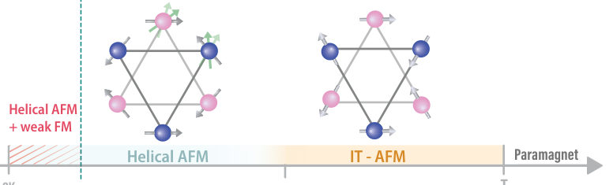
<figcaption class="paper-figure-caption"><b>Fig 1.</b> FIG. 1: Magnetic phase diagram of Mn3Sn. The evolution of magnetic states is shown as a function of temperature, indicating key transition temperatures (Tf, Tt, and TN). Exact values are omitted here because transition temperatures vary between samples. The spin configurations of the Mn atoms on the kagome lattice are illustrated for the helical antiferromagnetic (AFM) and inverse triangular AFM (IT-AFM) phases. Blue and pink atoms denote Mn atoms located in different layers in the unit cell. Green arrows show the IC spin rotation in subsequent unit cells for the respective layers.</figcaption>
</figure>
<figure class="paper-figure-card">
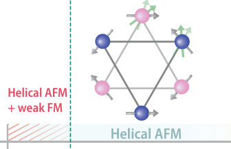
<figcaption class="paper-figure-caption"><b>Fig 2.</b> Fig. 2(c) shows the real part of the ACMS of Mn3Sn between 5 K and 80 K. A distinct peak is observed at Tf = 21 K. Notably, our results do not show a frequency- dependent shift for this peak.</figcaption>
</figure>
<figure class="paper-figure-card">
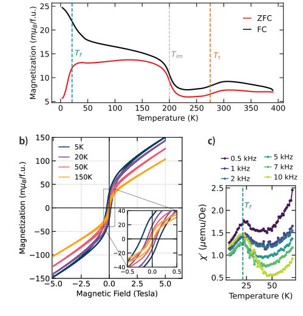
<figcaption class="paper-figure-caption"><b>Fig 3.</b> FIG. 2: Bulk magnetic characterization. a) Tempera- ture dependence of the magnetization using zero-field-cooled (ZFC) and field-cooled (FC) protocols with an applied mag- netic field of B = 0.1 T, marking key transition temperatures (Tf, Tim, and Tt). b) M(H) curves showing magnetization as a function of applied magnetic field between -5 T and 5 T at 5 K, 20 K, 50 K, and 150 K. The inset provides a magni- fied view of the low-field region to highlight the temperature evolution of the hysteresis. c) Real part of the AC magnetic susceptibility (ACMS), χ′, as a function of temperature across various frequencies, showing a peak near Tf.</figcaption>
</figure>
<figure class="paper-figure-card">
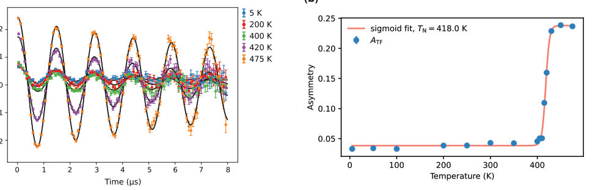
<figcaption class="paper-figure-caption"><b>Fig 4.</b> FIG. 3: N´eel temperature from TF-µ+SR. (a) Muon spin relaxation (µ+SR) spectra of Mn3Sn measured in an applied transverse field (TF) of B = 50 G at various temperatures. Solid black lines show fits to the experimental data using Eq. (1). (b) Evolution of the fitted TF asymmetry coefficient, A0, as a function of temperature. The sharp magnetic transition is fitted with a sigmoid function (red curve), extracting a N´eel temperature of TN = 418 K.</figcaption>
</figure>
<figure class="paper-figure-card">
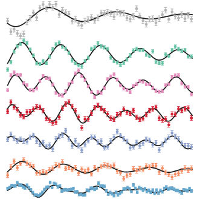
<figcaption class="paper-figure-caption"><b>Fig 5.</b> FIG. 4: Temperature evolution of ZF-µ+SR spectra. Zero-field (ZF) muon spin relaxation (µ+SR) asymmetry of Mn3Sn measured at various temperatures from 5 K to 450 K. Solid black lines show fits to the experimental data using Eq. (2). Successive spectra are vertically offset by a constant value for clarity of presentation.</figcaption>
</figure>
</div>

<p><strong>Summary.</strong> This work investigates the intricate temperature-dependent magnetic phase evolution in the Weyl semimetal Mn3Sn using muon spin relaxation ($\mu^+$SR) and magnetization measurements. It identifies three distinct magnetic transitions, demonstrating that the material's magnetic state is highly dynamic, featuring coexisting local environments rather than simple sequential ordering. The findings provide detailed microscopic insight into complex magnetism in topological materials.</p>
<p><strong>Why it may be interesting.</strong> The study uses highly sensitive local probes ($\mu^+$SR) to map out complex, coexisting magnetic orders in a topological material. The observation of continuously evolving phases rather than sharp transitions is relevant for understanding quantum critical points and emergent many-body dynamics.</p>
<details>
<summary>Detailed structure</summary>
<p><strong>Main problem.</strong> The study aims to resolve the microscopic magnetic phase evolution of the Weyl semimetal Mn3Sn across multiple temperature regimes.</p>
<p><strong>Main result.</strong> The material exhibits a highly dynamic magnetic landscape characterized by coexisting and continuously evolving complex magnetic orders (IT-AFM, IC-helical) rather than abrupt transitions. The low-temperature state shows an increasing ferromagnetic component decoupled from static spin-glass freezing.</p>
<p><strong>Method.</strong> Muon Spin Relaxation ($\mu^+$SR) measurements in both Zero-Field (ZF) and Transverse Field (TF), complemented by bulk magnetization ($M(H)$) and AC susceptibility studies.</p>
<p><strong>Model / system.</strong> The physical system is the Weyl semimetal Mn3Sn. The analysis probes its magnetic transitions between an Inverse Triangular Antiferromagnetic (IT-AFM) phase, an Incommensurate Helical Antiferromagnetic (IC-helical) phase, and a low-temperature ferromagnetic component.</p>
<p><strong>Key observables.</strong> Muon spin relaxation spectra asymmetry ($A_{	ext{tot}}$), relaxation rates ($\lambda$), bulk magnetization $M(T)$ and $M(H)$, and transition temperatures ($T_N=418 	ext{ K}, T_t \approx 275 	ext{ K}, T_f = 21 	ext{ K}$).</p>
<p><strong>Important parameters / regimes.</strong> Temperature (ranging from 5 K to 475 K), applied magnetic field, and the fractional loss of initial asymmetry ($\sim 20\%$) in the IT-AFM phase.</p>
<p><strong>Assumptions / limitations.</strong> The interpretation of missing muon asymmetry is tentative, suggesting possible origins like domain walls or grain boundaries; further single-crystal measurements are needed for confirmation.</p>
<p><strong>Figures summary.</strong> Figures illustrate the magnetic phase diagram showing three transitions. Magnetization curves show hysteresis changes across temperatures, and $\mu^+$SR spectra detail the temperature dependence of oscillations and relaxation rates in different phases.</p>
<p><strong>Paper structure.</strong> The paper systematically analyzes magnetic behavior using $\mu^+$SR (ZF/TF) to map out multiple magnetic transitions ($T_N, T_t, T_f$). It details the spectral signatures unique to each phase—from IC-helical field distributions to IT-AFM depolarization—culminating in a conclusion of continuous magnetic evolution.</p>
</details>
<details>
<summary>Abstract</summary>
<p>We report a comprehensive muon spin relaxation ($μ^+$SR) and bulk magnetization study of the antiferromagnetic (AFM) Weyl semimetal Mn$_3$Sn (composition Mn$_{2.99}$Sn). Mn$_3$Sn is reported to exhibit a commensurate inverse triangular (IT) AFM phase, an incommensurate (IC) helical AFM phase, and a proposed low-temperature spin-glass-like state. In our sample, we establish the respective transition temperatures for these phases to be $T_\mathrm{N} = 418$ K, $T_\mathrm{t} \approx 275$ K, and $T_\mathrm{f} = 21$ K. Investigating the low-temperature regime below $T_\mathrm{f}$, we find no evidence of a static spin-glass state. Instead, the sample exhibits an increasing ferromagnetic (FM) component accompanied by a localized slowing of spin fluctuations, indicating that these phenomena may be decoupled. In the IC helical AFM phase, fitting the zero-field (ZF) spectra reveals an asymmetric internal magnetic-field distribution, indicating that the magnetic structure is heavily modified by anharmonicity. Upon warming above 150 K, a continuous redistribution of muon spectral weight reveals a broad regime of coexisting local magnetic environments associated with the IC helical and IT-AFM phases. In the commensurate IT-AFM phase above $T_\mathrm{t}$, a persistent missing fraction in the initial asymmetry indicates that a subset of implanted muons, corresponding to roughly 20% of the sample-related asymmetry, undergoes unresolved ultrafast depolarization. Finally, we observe temperature-driven shifts in muon site populations above 325 K. Ultimately, our results show a highly dynamic magnetic landscape in Mn$_3$Sn, demonstrating how its complex magnetic orders often coexist and evolve continuously with temperature.</p>
</details>
<p><sub><a href="#top">↑ back to top</a></sub></p>

<p><a id="paper-2608.00550"></a></p>
<h3 id="multiparameter-quantum-estimation-in-a-photon-system-induced-by-gravitational-redshift"><a href="http://arxiv.org/abs/2608.00550v1">Multiparameter quantum estimation in a photon system induced by gravitational redshift</a></h3>
<p><strong>Authors:</strong> Wei Ye, Hui Cao, Songtao Zhang, Xiang Zhu, Huan Zhang, Ying Xia, Shixun You, Daisheng Zhang, Shoukang Chang<br>
<strong>Type:</strong> theory · <strong>Category:</strong> quantum information and computing · <strong>PDF:</strong> <a href="https://arxiv.org/pdf/2608.00550v1">https://arxiv.org/pdf/2608.00550v1</a><br>
<strong>Analysis basis:</strong> full PDF text, analyzed in chunks
<strong>Topic relevance:</strong> <code>correlated / nonlocal dissipation</code> <strong>1/5</strong> · <code>entanglement &amp; information structure</code> <strong>1/5</strong> · <code>quantum measurements</code> <strong>1/5</strong></p>
<div class="figure-strip-hint">↔ Scroll figures horizontally</div>
<div class="paper-figures-scroll">
<figure class="paper-figure-card">
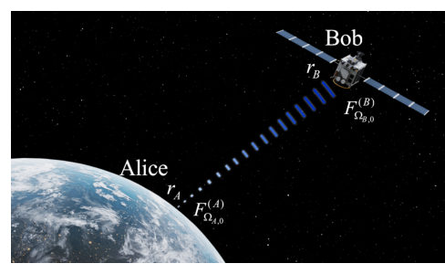
<figcaption class="paper-figure-caption"><b>Fig 1.</b> FIG. 1: (Color online) The sender, Alice, located at position rA, transmits a photonic wave packet initially characterized by a frequency distribution F (A) ΩA,0. This wave packet propagates through a curved spacetime background and is subsequently received by Bob at position rB, with the frequency distribution F (B) ΩB,0.</figcaption>
</figure>
<figure class="paper-figure-card">
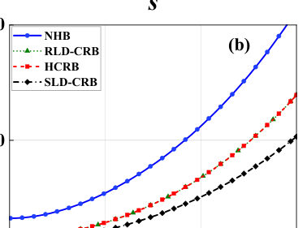
<figcaption class="paper-figure-caption"><b>Fig 2.</b> FIG. 5: (Color online) Error bounds as a function of (a) the s- parameter with α = π/2, θ = π/4, and ωc = t = η = 1, and of (b) the time parameter ωct with α = π/2, θ = π/4, s = 0.5, and η = 1.</figcaption>
</figure>
<figure class="paper-figure-card">
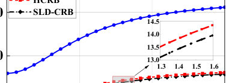
<figcaption class="paper-figure-caption"><b>Fig 3.</b> FIG. 4: (Color online) Error bounds as a function of (a) the s- parameter with α = π/2, θ = π/3, and ωc = t = η = 1, and of (b) the time parameter ωct with α = π/2, θ = π/3, s = 2, and η = 1.</figcaption>
</figure>
</div>

<p><strong>Summary.</strong> This paper analyzes multiparameter quantum estimation for photons affected by gravitational redshift and environmental noise. It compares several theoretical error bounds (like CRB vs. Nagaoka bound) and finds that the Nagaoka bound provides the tightest limit. The results show enhanced measurement precision in specific physical regimes, advancing the understanding of quantum sensing under extreme conditions.</p>
<p><strong>Why it may be interesting.</strong> This work directly tackles advanced topics at the intersection of quantum metrology and general relativity, providing rigorous theoretical bounds on measurement precision when fundamental spacetime effects are present. The comparison between multiple bounding techniques is highly relevant to understanding physical limits.</p>
<details>
<summary>Detailed structure</summary>
<p><strong>Main problem.</strong> The study investigates the ultimate precision limits for estimating multiple unknown parameters characterizing a photon system that has propagated through curved spacetime, specifically due to gravitational redshift.</p>
<p><strong>Main result.</strong> The Nagaoka bound was shown to yield the tightest error estimate among several considered bounds (CRB, HCRB), and enhanced estimation precision was observed in specific physical regimes like strong-coupling or sub-Ohmic dephasing.</p>
<p><strong>Method.</strong> The authors compared various quantum estimation bounds—including the Quantum Cramér-Rao Bound (CRB) and Holevo CRB—and utilized Semidefinite Programming (SDP) to derive tighter, numerically computable limits for multi-parameter estimation.</p>
<p><strong>Model / system.</strong> The system is a photon propagating through curved spacetime, modeled by gravitational redshift effects. The analysis incorporates environmental noise via amplitude-damping and Ohmic-like dephasing channels.</p>
<p><strong>Key observables.</strong> Mean Square Error Matrix ($\Sigma_{	heta}$), Fidelity ($   ilde{F}$), and the estimation error bounds themselves (e.g., Nagaoka Bound, HCRB).</p>
<p><strong>Important parameters / regimes.</strong> Initial phase parameter, weight parameter, gravitational redshift strength ($   heta$), and environmental coupling parameters ($s$ for dephasing regimes).</p>
<p><strong>Assumptions / limitations.</strong> The primary limitation addressed is the failure of the standard quantum CRB to provide a tight bound in the multi-parameter setting due to measurement incompatibility.</p>
<p><strong>Figures summary.</strong> Figures illustrate how various error bounds compare across different physical parameters, such as the dephasing parameter $s$ or propagation time $\omega ct$, demonstrating regime-dependent precision enhancements.</p>
<p><strong>Paper structure.</strong> The paper reviews the theoretical framework of quantum estimation bounds (CRB vs. Holevo/Nagaoka) and then applies these tools to a specific physical model: photon propagation under gravitational redshift and environmental noise, culminating in numerical comparisons for multi-parameter estimation.</p>
</details>
<details>
<summary>Abstract</summary>
<p>As photons propagate through curved spacetime, gravitational effects become unavoidable. In particular, gravitational redshift can induce significant distortion in photon wave packets, making it es?sential to investigate parameter estimation within this context. While previous research has focused on single-parameter estimation using the quantum Cramer-Rao bound, the multiparameter scenario remains largely unexplored. In this work, we investigate multiparameter quantum estimation for a photon system subject to gravitational redshift under both amplitude-damping and Ohmic-like dephasing channels. Our analysis reveals that the quantum Cramer-Rao bound fails to provide a tight error bound for the two-parameter estimation involving the initial phase and weight parameters inboth types of noisy channels. To overcome this limitation, we numerically compute two tighter error bounds, i.e., the Holevo Cramer-Rao bound and the Nagaoka bound, when utilizing a semidefinite program. We demonstrate that the Nagaoka bound yields the tightest error bound among all considered bounds, consistent with the general hierarchy of multiparameter quantum estimation. Furthermore, for the three-parameter estimation, including the initial weight parameter, the phase parameter, and the strength of gravitational redshift, we observe significantly enhanced estimation precision in the strong-coupling regime compared to the weak-coupling regime under the amplitude-damping channel. Similarly, in the Ohmic-like dephasing channel, the sub-Ohmic regime consistently affords higher precision than the Ohmic and super-Ohmic regimes.</p>
</details>
<p><sub><a href="#top">↑ back to top</a></sub></p>

<p><a id="paper-2608.01016"></a></p>
<h3 id="predictive-formulas-for-scattering-mean-free-path-for-general-disordered-dielectric-media-beyond-the-long-wavelength-regime"><a href="http://arxiv.org/abs/2608.01016v1">Predictive Formulas for Scattering Mean Free Path for General Disordered Dielectric Media Beyond the Long-Wavelength Regime</a></h3>
<p><strong>Authors:</strong> Jaeuk Kim, Salvatore Torquato<br>
<strong>Type:</strong> theory · <strong>Category:</strong> disordered systems and neural networks · <strong>PDF:</strong> <a href="https://arxiv.org/pdf/2608.01016v1">https://arxiv.org/pdf/2608.01016v1</a><br>
<strong>Analysis basis:</strong> full PDF text, analyzed in chunks
<strong>Topic relevance:</strong> <code>Keldysh / 2PI / non-Gaussian methods</code> <strong>1/5</strong> · <code>methods for driven-dissipative</code> <strong>1/5</strong> · <code>non-equilibrium dynamics</code> <strong>1/5</strong></p>
<div class="figure-strip-hint">↔ Scroll figures horizontally</div>
<div class="paper-figures-scroll">
<figure class="paper-figure-card">
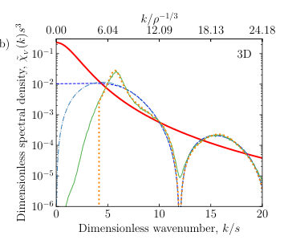
<figcaption class="paper-figure-caption"><b>Fig 1.</b> Fig. 2, and are also employed in FDTD simulations for d = 2, 3.</figcaption>
</figure>
<figure class="paper-figure-card">
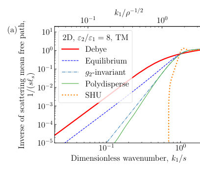
<figcaption class="paper-figure-caption"><b>Fig 2.</b> Figure 8 makes comparisons of 1/ℓs for 3D (fully statistically</figcaption>
</figure>
</div>

<p><strong>Summary.</strong> The paper develops advanced, microstructure-based formulas to predict the scattering mean free path ($\ell_s$) in general disordered dielectric media. It surpasses older models by handling arbitrarily shaped and polydisperse scatterers beyond the long-wavelength limit. This allows for the theoretical design of wave transport properties in engineered composites.</p>
<p><strong>Why it may be interesting.</strong> This work provides a rigorous theoretical framework for predicting wave transport in complex, engineered disordered materials, which is crucial for designing metamaterials or photonic structures where scattering control is paramount.</p>
<details>
<summary>Detailed structure</summary>
<p><strong>Main problem.</strong> The primary goal is to derive predictive formulas for the scattering mean free path ($\ell_s$) in general disordered dielectric media, extending beyond the limitations of the standard long-wavelength approximations.</p>
<p><strong>Main result.</strong> The derived formulas are more general than Mie estimates, applicable to arbitrarily shaped and polydisperse particles, and predict specific scaling laws for hyperuniform media ($\ell_s \sim k_1^{-(d+1+\alpha)}$).</p>
<p><strong>Method.</strong> The theory is based on the exact strong-contrast expansion for the effective dynamic dielectric constant, validated by comparison with finite-difference time-domain (FDTD) simulations.</p>
<p><strong>Model / system.</strong> The study analyzes two-phase dielectric media, encompassing ordinary particulate systems, general nonparticulate media, and engineered structures like hyperuniform and stealthy hyperuniform composites in dimensions d=1, 2, and 3.</p>
<p><strong>Key observables.</strong> Scattering mean free path ($\ell_s$), scattering coefficient ($\mu_s$), effective dynamic dielectric constant ($\epsilon_e$).</p>
<p><strong>Important parameters / regimes.</strong> Incident wavenumber ($k_1$), specific surface ($s$), dielectric contrast ratio ($\epsilon_2/\epsilon_1$), and the hyperuniformity exponent ($\alpha$).</p>
<p><strong>Assumptions / limitations.</strong> The formulas are derived using a strong-contrast expansion, which assumes the specimen is macroscopically large and statistically homogeneous.</p>
<p><strong>Figures summary.</strong> References suggest comparisons between different theoretical approximations (like Mie estimates) and simulations across various microstructures and polarization states.</p>
<p><strong>Paper structure.</strong> The paper develops general formulas based on the effective dielectric constant, compares these to established Mie theory limits, applies them to multiple model microstructures (including hyperuniform types), and validates predictions against FDTD simulation results.</p>
</details>
<details>
<summary>Abstract</summary>
<p>We derive predictive formulas for the scattering mean free path $\ell_s$ of statistically homogeneous two-phase dielectric media in dimensions $d=1,2,3$. Unlike Mie-based estimates limited to identical circular or spherical scatterers, the formulas apply to arbitrarily shaped and polydisperse particulate media as well as nonparticulate media, with microstructure entering through the spectral density. The formulas are based on the exact strong-contrast expansion for the effective dynamic dielectric constant. We apply them to five nonhyperuniform and hyperuniform models and validate selected cases using finite-difference time-domain simulations. For $k_1/s \lesssim 1$, where $k_1$ is the incident wavenumber and $s$ is the specific surface, the predictions agree well with simulations and are consistent with Mie theory where applicable, while improving accuracy for two-dimensional transverse-magnetic polarization. Mie estimates become more accurate for $k_1/s \gtrsim 1$. For hyperuniform media with $\widetildeχ_V(k)\sim k^α$ at small $k$, the theory predicts $\ell_s\sim k_1^{-(d+1+α)}$; stealthy hyperuniform media are transparent over a finite wavenumber interval. These results provide a microstructure-based route to predict and design wave transport in general disordered dielectric materials.</p>
</details>
<p><sub><a href="#top">↑ back to top</a></sub></p>

<p><a id="paper-2608.01244"></a></p>
<h3 id="pressure-induced-self-doping-and-fermi-surface-reconstruction-in-uas2"><a href="http://arxiv.org/abs/2608.01244v1">Pressure-induced self-doping and Fermi surface reconstruction in UAs2</a></h3>
<p><strong>Authors:</strong> Zhenchao Wu, Yingying Cao, Yi-feng Yang<br>
<strong>Type:</strong> theory · <strong>Category:</strong> strongly correlated electrons · <strong>PDF:</strong> <a href="https://arxiv.org/pdf/2608.01244v1">https://arxiv.org/pdf/2608.01244v1</a><br>
<strong>Analysis basis:</strong> full PDF text, analyzed in chunks
<strong>Topic relevance:</strong> <code>Keldysh / 2PI / non-Gaussian methods</code> <strong>1/5</strong> · <code>Kondo &amp; dissipative impurity</code> <strong>1/5</strong> · <code>analog quantum simulation</code> <strong>1/5</strong></p>
<div class="figure-strip-hint">↔ Scroll figures horizontally</div>
<div class="paper-figures-scroll">
<figure class="paper-figure-card">
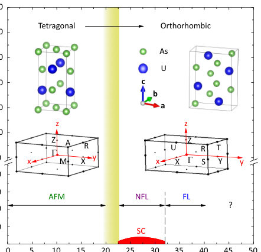
<figcaption class="paper-figure-caption"><b>Fig 1.</b> FIG. 1: Schematic phase diagram and crystal structures of UAs2 reproduced from Ref. [20]. The upper panel shows the tetragonal and orthorhombic crystal structures together with their corresponding Brillouin zones in the low- and high- pressure phases, respectively. The lower panel presents the schematic pressure–temperature phase diagram below 40 K, showing the low-pressure antiferromagnetic (AFM) phase, the superconducting (SC) dome, the non-Fermi-liquid (NFL) re- gion above Tc, and the high-pressure Fermi-liquid (FL) regime reported only up to 40.5 GPa. The yellow shaded region indicates the pressure range over which the tetragonal-to- orthorhombic structural transition occurs.</figcaption>
</figure>
<figure class="paper-figure-card">
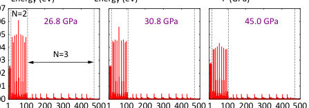
<figcaption class="paper-figure-caption"><b>Fig 2.</b> FIG. 3: Electronic structure of UAs2 under pressure obtained from DFT+DMFT at 50 K. (a) Momentum-resolved spectral functions at 26.8, 30.8, and 45 GPa. The arrow marks a low-energy kink, and the inset highlights the corresponding change in the slope of the real part of the real-frequency self- energy. (b) Pressure evolution of the U-5f5/2 (left) and U- 5f7/2 (right) densities of states at 26.8, 30.8, and 45 GPa. (c) Pressure dependence of the U-5f5/2, U-5f7/2, and total U-5f occupancies. (d) Probabilities of the atomic 5f-electron configurations obtained from the CT-HYB impurity solver at 26.8, 30.8, and 45 GPa. The dashed lines separate the N = 1, 2, and 3 configurations, where N denotes...</figcaption>
</figure>
<figure class="paper-figure-card">
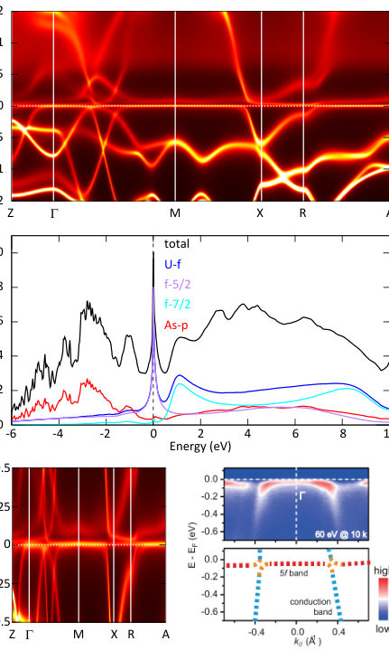
<figcaption class="paper-figure-caption"><b>Fig 3.</b> FIG. 2: Correlated electronic structure of UAs2 at am- bient pressure obtained from DFT+DMFT at 50 K. (a) Momentum-resolved spectral function A(k, ω) along a high- symmetry path in the Brillouin zone. (b) Density of states showing the contributions from the U-5f5/2, U-5f7/2, and As- 3p orbitals. (c) Comparison between the calculated spectral function and ARPES measurements [18], illustrating the ori- gin of the flat bands along the Γ–M direction.</figcaption>
</figure>
<figure class="paper-figure-card">
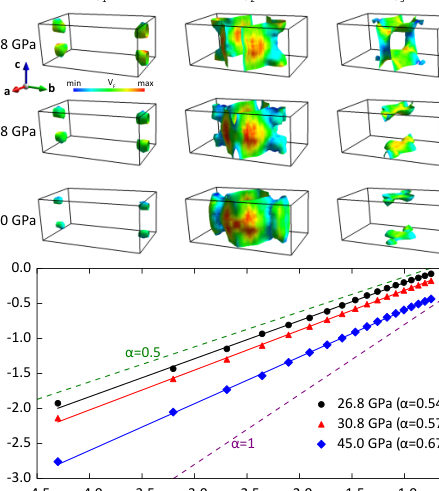
<figcaption class="paper-figure-caption"><b>Fig 4.</b> FIG. 4: (a) Evolution of the Fermi surfaces at 26.8, 30.8, and 45 GPa. (b) Log-log plots of the negative imaginary part of the Matsubara self-energy for the U-5f5/2 states. The solid lines are power-law fits to the data at 26.8, 30.8, and 45 GPa, while the green and purple dashed lines denote the reference power laws with exponents of 0.5, characteristic of non-Fermi-liquid behavior, and 1, expected for a Fermi liquid, respectively. The Fermi-surface visualization was performed using the FermiSurfer code [42]. The colors represent the magnitudes of the Fermi velocity.</figcaption>
</figure>
</div>

<p><strong>Summary.</strong> This work uses DFT+DMFT to investigate how pressure alters the electronic structure of the heavy-fermion superconductor UAs2. The key finding is that a pressure-induced self-doping effect, involving electron transfer between different 5f orbitals, reconstructs the Fermi surface into a state conducive to high Tc superconductivity. This suggests that orbital physics and Fermi surface nesting are crucial ingredients for unconventional pairing in correlated materials.</p>
<p><strong>Why it may be interesting.</strong> While focused on actinides, the concept of tuning electronic correlations via external parameters (pressure) to induce novel quantum states like high-$T_c$ superconductivity through orbital physics is highly relevant to understanding strongly correlated systems in AMO and condensed matter theory.</p>
<details>
<summary>Detailed structure</summary>
<p><strong>Main problem.</strong> To elucidate the microscopic origin of superconductivity in UAs2 under pressure by understanding how electronic structure changes drive superconducting behavior.</p>
<p><strong>Main result.</strong> Superconductivity emerges when the Fermi surface has two disconnected, nested sheets, driven by a pressure-induced self-doping effect involving orbital-selective charge redistribution between 5f orbitals.</p>
<p><strong>Method.</strong> Density Functional Theory combined with Dynamical Mean-Field Theory (DFT+DMFT) calculations were used to model the electronic structure evolution under varying pressures.</p>
<p><strong>Model / system.</strong> The study focuses on UAs2, a heavy-fermion compound exhibiting superconductivity. The theoretical framework models the correlated 5f electrons using DFT+DMFT, incorporating spin-orbit coupling and local Coulomb interactions.</p>
<p><strong>Key observables.</strong> Momentum-resolved spectral function A(k, omega), Partial Densities of States (DOS) for U-5f orbitals, Fermi surface topology, and superconducting transition temperature (Tc).</p>
<p><strong>Important parameters / regimes.</strong> Pressure range (ambient to 45 GPa); orbital indices ($j=5/2$ vs $j=7/2$); charge fluctuation probabilities.</p>
<p><strong>Assumptions / limitations.</strong> The calculations assume a nonmagnetic state for simplicity, and the mechanism remains partially unexplained despite strong evidence pointing toward nesting and fluctuations.</p>
<p><strong>Figures summary.</strong> Figures illustrate the phase diagram showing structural transitions (tetragonal to orthorhombic) alongside electronic structure changes; spectral functions show flat bands shifting with pressure, and Fermi surface plots detail the evolution from disconnected sheets to a merged cylinder.</p>
<p><strong>Paper structure.</strong> The paper first establishes the ambient pressure state matching ARPES data. It then analyzes the effect of increasing pressure, detailing orbital-selective charge transfer (self-doping), followed by mapping how the resulting Fermi surface topology dictates the superconducting phase boundary.</p>
</details>
<details>
<summary>Abstract</summary>
<p>Superconductivity has recently been reported in the heavy-fermion compound UAs2 under pressure, with the highest Tc among uranium-based correlated 5f-electron superconductors. To elucidate its microscopic origin, we investigate its electronic structure using density functional theory combined with dynamical mean-field theory (DFT+DMFT). At ambient pressure, our calculations reproduce the characteristic Kondo-lattice electronic structure, with flat hybridization bands near the Fermi energy around the Γ and M points, in good agreement with angle-resolved photoemission spectroscopy (ARPES). Under pressure, we find a systematic transfer of electrons from the more localized 5f5/2 orbitals to the more itinerant 5f7/2 orbitals, while the total U-5f occupancy remains nearly unchanged. This orbital-selective charge redistribution constitutes a pressure-induced self-doping effect that drives the 5f5/2 electrons from a localized Kondo regime toward a mixed-valence regime with enhanced charge fluctuations, leading to a dramatic reconstruction of the low-energy electronic structure. Remarkably, superconductivity emerges in the pressure range where the Fermi surface consists of two disconnected sheets with enhanced nesting, but disappears when they bend and merge into a corrugated three-dimensional cylinder. Our results provide an electronic-structure basis for understanding superconductivity in UAs2 and suggest that Fermi-surface nesting and charge fluctuations may contribute to the enhanced superconducting Tc, pointing to a possible distinction from conventional heavy-fermion superconductors.</p>
</details>
<p><sub><a href="#top">↑ back to top</a></sub></p>

<p><a id="paper-2608.00167"></a></p>
<h3 id="rhombohedral-graphene-a-tale-of-many-crystals"><a href="http://arxiv.org/abs/2608.00167v1">Rhombohedral Graphene: A Tale of Many Crystals</a></h3>
<p><strong>Authors:</strong> Ahmed Abouelkomsan, Filippo Gaggioli, Daniele Guerci, Liang Fu<br>
<strong>Type:</strong> theory · <strong>Category:</strong> strongly correlated electrons · <strong>PDF:</strong> <a href="https://arxiv.org/pdf/2608.00167v1">https://arxiv.org/pdf/2608.00167v1</a><br>
<strong>Analysis basis:</strong> full PDF text, analyzed in chunks
<strong>Topic relevance:</strong> <code>Keldysh / 2PI / non-Gaussian methods</code> <strong>1/5</strong> · <code>analog quantum simulation</code> <strong>1/5</strong> · <code>methods for driven-dissipative</code> <strong>1/5</strong></p>
<div class="figure-strip-hint">↔ Scroll figures horizontally</div>
<div class="paper-figures-scroll">
<figure class="paper-figure-card">
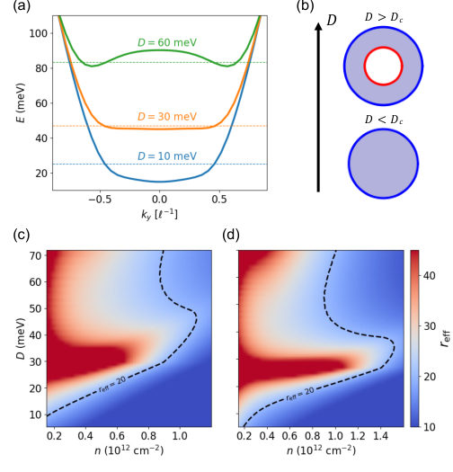
<figcaption class="paper-figure-caption"><b>Fig 1.</b> FIG. 1. Microscopic band structure (a) and illustration of the simply-connected and annular Fermi sea regimes (blue shaded), with the black and red lines indicating electron- and hole-like Fermi surfaces, respectively. Ratio of interaction en- ergy to kinetic energy in 4 (c) and 5 layer (d) rhombohedral graphene, with relative dielectric constant ϵ = 5.</figcaption>
</figure>
<figure class="paper-figure-card">
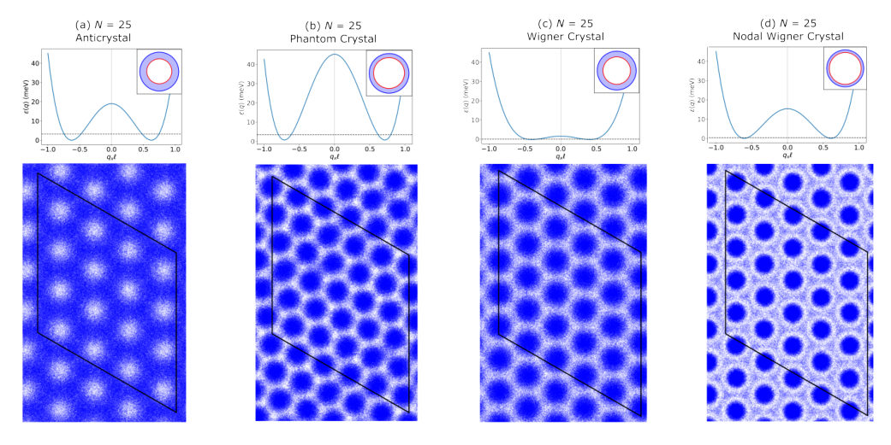
<figcaption class="paper-figure-caption"><b>Fig 2.</b> FIG. 2. (a)–(d) Ground-state charge density obtained from NN-VMC, illustrating four representative crystalline states. Blue denotes regions of high electron density, while white denotes regions of low density. The parameters are (α/EC, γ/EC, n) = (0.582, 0.740, 0.86 × 1012 cm−2) for (a), (0.740, 0.740, 0.659 × 1012 cm−2) for (b), (0.232, 0.702, 0.293 × 1012 cm−2) for (c), and (0.544, 0.739, 0.293 × 1012 cm−2) for (d). EC = e2/(4πϵϵ0ℓ) is the Coulomb energy scale where ℓ= ℏvF /t1 is the characteristic length scale of graphene with the Fermi velocity vF and t1 is inter-layer opposite sublattice hopping strength [17]. The parallelogram indicates the simulation supercell. Calculations are...</figcaption>
</figure>
<figure class="paper-figure-card">
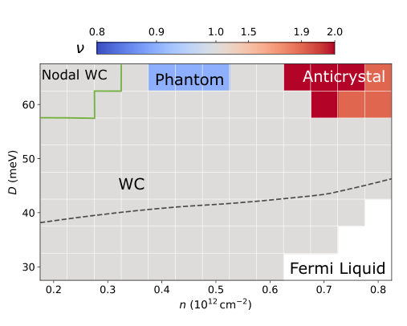
<figcaption class="paper-figure-caption"><b>Fig 3.</b> FIG. 3. Hartree Fock phase diagram for electrons with disper- sion ϵ(k) of the conduction band of rhombohedral tetralayer graphene, interacting via the long-range Coulomb interaction with dielectric constant ϵ = 12. The color code indicates the filling factor ν of the ground state crystal unit cell. The dashed line denotes the Lifshitz line where the Fermi surface topology chances.</figcaption>
</figure>
<figure class="paper-figure-card">
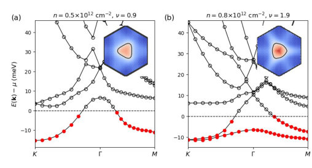
<figcaption class="paper-figure-caption"><b>Fig 4.</b> FIG. 4. Hartree-Fock band structure of the self-doped Wigner crystal (a) and the metallic anticrystal (b). The inset of panels (a) and (b) show the Fermi surface of hole-like quasi- particles. Panel (a) is obtained at n = 0.5 × 1012cm−2 and D = 65meV (ν ≈0.9), and panel (b) at n = 0.8 × 1012cm−2</figcaption>
</figure>
</div>

<p><strong>Summary.</strong> This paper investigates the complex quantum phase diagram of rhombohedral graphene, revealing multiple correlated electronic phases. Using advanced computational methods like NN-VMC, the authors predict novel crystalline structures, such as 'anticrystals,' that arise from strong electron-electron interactions tuned by external fields. This work advances our understanding of emergent order in low-dimensional correlated materials.</p>
<p><strong>Why it may be interesting.</strong> The work provides detailed theoretical predictions for exotic insulating and superconducting states in 2D materials, offering concrete targets for experimental verification relevant to strongly interacting electron systems.</p>
<details>
<summary>Detailed structure</summary>
<p><strong>Main problem.</strong> The study aims to identify the organizing principles governing the emergence, competition, and coexistence of strongly correlated quantum phases in rhombohedral graphene.</p>
<p><strong>Main result.</strong> The authors predict unconventional quantum crystals, including a self-doped crystal and an 'anticrystal' (a lattice of holes), which are not found in classical systems.</p>
<p><strong>Method.</strong> They employ a combination of Neural-Network Variational Monte Carlo (NN-VMC) methods with Hartree-Fock theory to solve for the interacting ground states.</p>
<p><strong>Model / system.</strong> The system is rhombohedral graphene, an atomically thin carbon multilayer whose low-energy band structure can be tuned by carrier density ($n$) and a displacement field ($D$).</p>
<p><strong>Key observables.</strong> Charge density profiles, the ratio $   ext{reff} = E_{ ext{int}} / E_{ ext{kin}}$, and the charge gap ($\Delta_{HF}$).</p>
<p><strong>Important parameters / regimes.</strong> Carrier density ($n$), displacement field ($D$), and the indicator value $    ext{reff}$ (strong correlation occurs when $    ext{reff} \ge 20$).</p>
<p><strong>Assumptions / limitations.</strong> The analysis relies on approximations like neglecting certain derivative terms in momentum space calculations, particularly in the thin-annulus limit.</p>
<p><strong>Figures summary.</strong> Figures illustrate band structure changes (single vs. annular Fermi sea) and show ground-state charge densities for four distinct crystalline states discovered via NN-VMC.</p>
<p><strong>Paper structure.</strong> The paper systematically maps out the energy landscape by varying $D$ and $n$, using $   ext{reff}$ as a guide to predict transitions between various correlated phases, including Wigner crystals and anti-crystals.</p>
</details>
<details>
<summary>Abstract</summary>
<p>Experiments on rhombohedral graphene have uncovered an extraordinary wealth of correlated quantum phases - from chiral superconductors to electronic crystals - all within a single family of atomically thin materials. Here, we introduce a simple indicator, derived from the noninteracting band dispersion, that identifies strongly correlated regions in the phase diagram of rhombohedral graphene as a function of carrier density and displacement field. We develop a neural-network variational Monte Carlo method, combined with Hartree-Fock theory, to solve the interacting ground states. Our calculation reveals a variety of electron crystals with no classical analog. These include, at increasing density: Wigner crystal, self-doped Wiger crystal, as well as ''anticrystal'', a lattice of holes in an electron liquid. We discuss their experimental manifestations and possible connection to superconductivity.</p>
</details>
<p><sub><a href="#top">↑ back to top</a></sub></p>

<p><a id="paper-2608.00524"></a></p>
<h3 id="cooperative-platoon-routing-and-dispatching-via-edge-assisted-hybrid-quantum-optimization"><a href="http://arxiv.org/abs/2608.00524v1">Cooperative Platoon Routing and Dispatching via Edge-Assisted Hybrid Quantum Optimization</a></h3>
<p><strong>Authors:</strong> Talha Azfar, Ruimin Ke<br>
<strong>Type:</strong> both · <strong>Category:</strong> quantum information and computing · <strong>PDF:</strong> <a href="https://arxiv.org/pdf/2608.00524v1">https://arxiv.org/pdf/2608.00524v1</a><br>
<strong>Analysis basis:</strong> full PDF text, analyzed in chunks
<strong>Topic relevance:</strong> <code>QC/QI experiment</code> <strong>1/5</strong> · <code>methods for driven-dissipative</code> <strong>1/5</strong></p>
<div class="figure-strip-hint">↔ Scroll figures horizontally</div>
<div class="paper-figures-scroll">
<figure class="paper-figure-card">
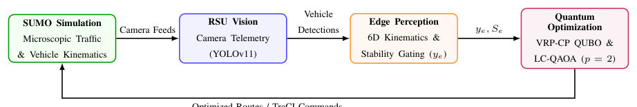
<figcaption class="paper-figure-caption"><b>Fig 1.</b> Fig. 1: Four-tier cyber-physical architecture: SUMO traffic is monitored by RSU camera telemetry (YOLOv11), converted into 6D kinematic features and stability flags (ye), compressed into a reward tensor (Se), solved by LC-QAOA / CPLEX, and returned as optimized CAV routes through TraCI.</figcaption>
</figure>
<figure class="paper-figure-card">
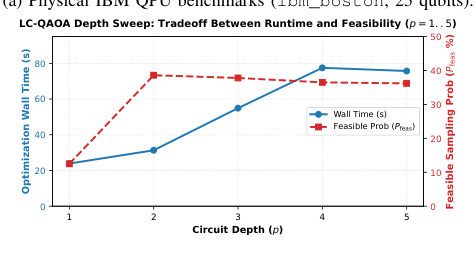
<figcaption class="paper-figure-caption"><b>Fig 2.</b> Fig. 2: Physical quantum hardware validation using 25 ac- tive qubits on ibm_boston. (a) LC-QAOA achieves 66.7% CNOT gate depth compression compared to standard all-to- all QAOA, increasing feasible sampling probability to 38.6%. (b) Circuit depth p = 2 achieves optimal feasible sampling (Pfeas = 38.6%) and optimal state probability (Popt = 14.2%) before hardware decoherence dominates at p ≥3.</figcaption>
</figure>
<figure class="paper-figure-card">
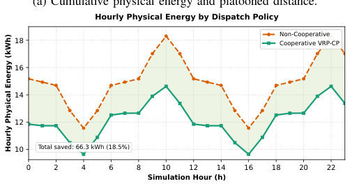
<figcaption class="paper-figure-caption"><b>Fig 3.</b> Fig. 3: Microscopic SUMO simulation results over the Troy, NY road network. Dynamic perception gating (ye = 1) reduces gross fleet tractive power demand from 358.4 kWh to 292.1 kWh, achieving an 18.5% physical energy reduction (66.3 kWh saved).</figcaption>
</figure>
</div>

<p><strong>Summary.</strong> The paper proposes an integrated framework for optimizing CAV routing by combining real-time traffic perception from roadside units with quantum computing. It formulates the problem as a QUBO and uses LC-QAOA on physical hardware, achieving significant energy savings (18.5%) in simulations while demonstrating improved quantum circuit performance over classical methods.</p>
<p><strong>Why it may be interesting.</strong> This work demonstrates a concrete application where quantum computation (solving NP-hard optimization problems like VRP) is hybridized with classical, real-time edge AI processing to solve complex physical systems challenges in autonomous transportation.</p>
<details>
<summary>Detailed structure</summary>
<p><strong>Main problem.</strong> Developing an edge-assisted, closed-loop evaluation pipeline for platooning-aware vehicle routing in Connected and Autonomous Vehicle (CAV) fleets operating in unstable urban traffic.</p>
<p><strong>Main result.</strong> The framework achieved an 18.5% reduction in fleet energy demand in simulations, while quantum benchmarks showed LC-QAOA reducing CNOT depth by 66.7% on physical hardware.</p>
<p><strong>Method.</strong> The problem is formulated as a QUBO model and solved using Linear-Chain QAOA (LC-QAOA) executed on an IBM QPU, integrated with edge perception data from roadside units.</p>
<p><strong>Model / system.</strong> The system involves a four-tier cyber-physical architecture: SUMO simulation for traffic, RSU vision (YOLOv11) for 6D kinematics, stability gating ($   ext{ye}$), and quantum optimization via QUBO Hamiltonian minimization. The objective function is minimized by mapping interactions to native quadratic Ising terms.</p>
<p><strong>Key observables.</strong> Energy savings (18.5% reduction), Feasible Sampling Probability ($P_{	ext{feas}}$ = 38.6%), Optimal Sampling Probability ($P_{	ext{opt}}$ = 14.2%), and two-qubit CNOT depth reduction (66.7%).</p>
<p><strong>Important parameters / regimes.</strong> The quantum circuit depth parameter $p$, the stability thresholding constants ($\le 0.12$ for speed, $\le 0.5 	ext{ m/s}^2$ for variance), and the Lagrange penalty multiplier $\gamma=50.0$.</p>
<p><strong>Assumptions / limitations.</strong> The energy model decouples optimization from physical evaluation; quantum execution is currently limited to localized subproblems (e.g., 25 qubits) rather than the entire network.</p>
<p><strong>Figures summary.</strong> Figures illustrate the four-tier cyber-physical architecture, show cumulative energy savings over time in SUMO simulations, and compare QAOA vs. LC-QAOA performance on the QPU regarding depth reduction and sampling fidelity.</p>
<p><strong>Paper structure.</strong> The paper details a multi-stage pipeline: 1) Edge perception (RSU/YOLOv11) estimates kinematics and gates platooning rewards based on physical stability. 2) The routing problem is formulated as a QUBO Hamiltonian, incorporating cost, platoon reward, and constraints. 3) This QUBO is solved using LC-QAOA on the QPU. 4) The optimized routes are fed back into a microscopic SUMO simulation for final energy evaluation.</p>
</details>
<details>
<summary>Abstract</summary>
<p>Cooperative platooning can reduce the energy use of Connected and Autonomous Vehicle (CAV) fleets, but the routing problem becomes difficult when vehicles must meet on the same road segments at compatible times while moving through unstable urban traffic. This paper develops an edge-assisted, closed-loop evaluation pipeline for platooning-aware vehicle routing. Roadside Units estimate local traffic kinematics from video, classify segment-level flow stability, and activate platooning rewards only on road segments where close-gap coordination is physically appropriate. The resulting multi-vehicle routing problem is written directly as a Quadratic Unconstrained Binary Optimization (QUBO) model, so pairwise platooning interactions are represented as native quadratic Ising terms instead of requiring auxiliary MILP linearization variables. We evaluate the framework using a 24-hour microscopic SUMO simulation of Troy, NY, together with localized IBM Quantum hardware benchmarks. The SUMO study shows an $18.5\%$ reduction in fleet tractive-energy demand relative to a non-cooperative baseline. On 25-active-qubit benchmark instances executed on $\texttt{ibm_boston}$, Linear-Chain QAOA reduces two-qubit CNOT depth by $66.7\%$ compared with dense QAOA and samples the exact classical ground state with $P_{\text{feas}} = 38.6\%$ and $P_{\text{opt}} = 14.2\%$ at $p=2$. These results suggest that edge perception and shallow quantum optimization can work together as a useful component of closed-loop CAV platoon dispatching.</p>
</details>
<p><sub><a href="#top">↑ back to top</a></sub></p>

<p><a id="paper-2608.01143"></a></p>
<h3 id="funnel-like-protein-energy-landscapes-emerge-from-functional-evolution-under-thermal-fluctuations"><a href="http://arxiv.org/abs/2608.01143v1">Funnel-like protein energy landscapes emerge from functional evolution under thermal fluctuations</a></h3>
<p><strong>Authors:</strong> Norifumi Maruyama, Macoto Kikuchi<br>
<strong>Type:</strong> theory · <strong>Category:</strong> statistical mechanics · <strong>PDF:</strong> <a href="https://arxiv.org/pdf/2608.01143v1">https://arxiv.org/pdf/2608.01143v1</a><br>
<strong>Analysis basis:</strong> full PDF text, analyzed in chunks
<strong>Topic relevance:</strong> <code>driven-dissipative phase transition</code> <strong>1/5</strong> · <code>methods for driven-dissipative</code> <strong>1/5</strong></p>
<div class="figure-strip-hint">↔ Scroll figures horizontally</div>
<div class="paper-figures-scroll">
<figure class="paper-figure-card">
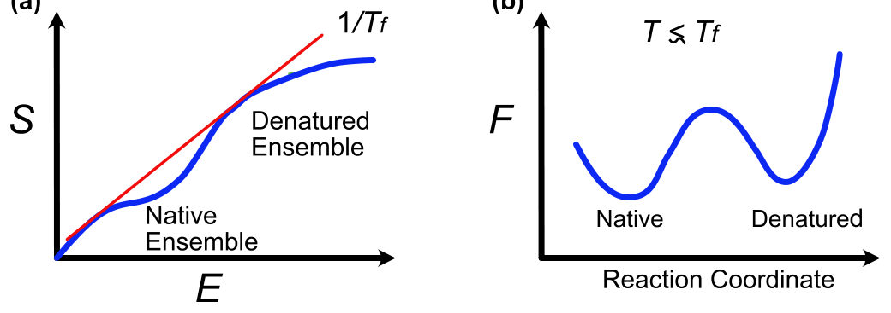
<figcaption class="paper-figure-caption"><b>Fig 1.</b> FIG. 1. Schematic representations of protein energy and free-energy landscapes. (a) Conformational entropy S(E) as a function of energy E for a protein with a funnel-shaped energy landscape. A common tangent touches the entropy curve at energies corresponding to the native and denatured ensembles. Its slope gives the inverse folding temperature, 1/Tf, at which the two ensembles coexist. (b) Corresponding free-energy landscape as a function of a schematic reaction coordinate. Below the folding temperature, the native and denatured ensembles form distinct minima separated by a free-energy barrier, giving rise to cooperative two-state folding.</figcaption>
</figure>
<figure class="paper-figure-card">
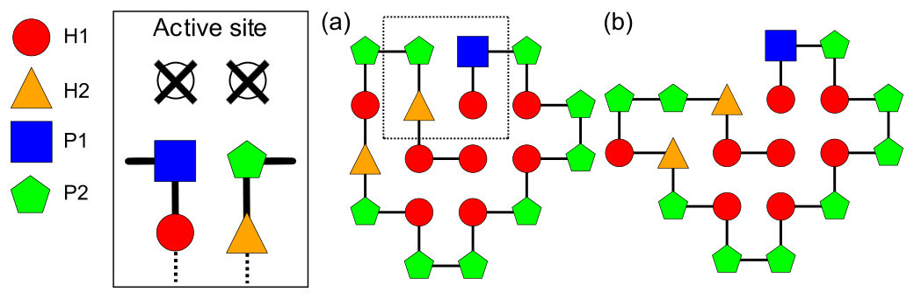
<figcaption class="paper-figure-caption"><b>Fig 2.</b> FIG. 2. Schematic illustration of the two-dimensional lattice protein model and the definition of the active site. The four residue types, H1, H2, P1, and P2, are represented by different symbols. A protein conformation is represented as a self-avoiding walk on a square lattice, and nonbonded nearest-neighbor residues interact through the contact energies listed in Table I. The active site is defined as the prescribed local arrangement of residues and covalent bonds shown in the boxed schematic. The crossed circles denote unoccupied lattice sites, ensuring that the active site is exposed on the protein surface, while the dotted lines indicate that the structure inside the four-residue motif is...</figcaption>
</figure>
<figure class="paper-figure-card">
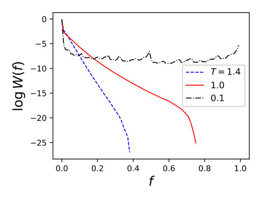
<figcaption class="paper-figure-caption"><b>Fig 3.</b> FIG. 3. Genotypic entropy as a function of fitness for envi- ronmental temperatures T = 0.1, 1.0, and 1.4. The geno- typic entropy is defined as the logarithm of the density of protein sequences with a given fitness. For each temperature, the density of sequences is normalized so that the total num- ber of sequences over all fitness bins is unity, allowing direct comparison among temperatures. At T = 1.0, the entropy decreases monotonically with increasing fitness, whereas it remains nearly constant at T = 0.1. At T = 1.4, the entropy terminates near f ≃0.4, indicating the absence of highly functional sequences.</figcaption>
</figure>
<figure class="paper-figure-card">
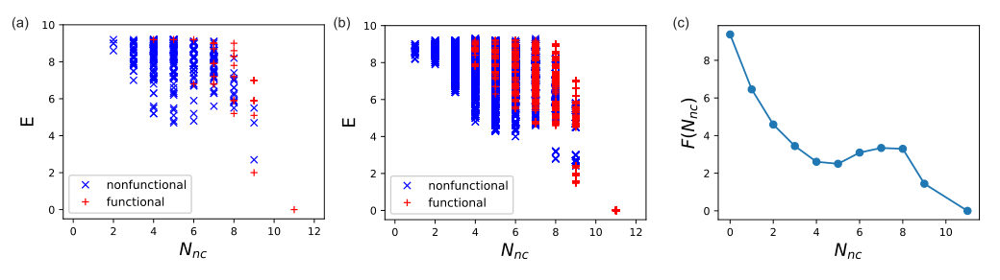
<figcaption class="paper-figure-caption"><b>Fig 4.</b> FIG. 4. Energy and free-energy landscapes of high-fitness sequences obtained at T = 1.0. (a) Energy spectrum of the highest- fitness sequence. The lowest 400 conformations ranked by energy are shown, with the energy E measured relative to the ground-state energy and plotted against the number of native contacts Nnc. The number of native contacts denotes the number of contacts shared with the native conformation and therefore serves as an order parameter for structural similarity to the native state. Functional conformations possessing the prescribed active-site motif are indicated by red plus signs, whereas nonfunctional conformations are indicated by blue crosses. (b) Energy spectra of the...</figcaption>
</figure>
<figure class="paper-figure-card">
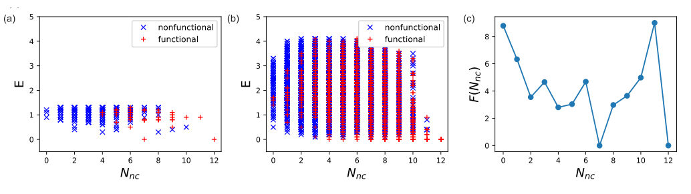
<figcaption class="paper-figure-caption"><b>Fig 5.</b> FIG. 5. Energy and free-energy landscapes of high-fitness sequences obtained at T = 0.1. (a) Energy spectrum of the sequence with the highest fitness among those with f &lt; 0.9. The lowest 400 conformations are shown as a function of the number of native contacts, with the energy measured relative to the ground-state energy. Functional and nonfunctional conformations are indicated by red plus signs and blue crosses, respectively. (b) Energy spectra of the 100 sequences with the highest fitness among those with f &lt; 0.9. For each sequence, the lowest 400 conformations are shown, with the energy measured relative to its ground-state energy and the native contacts defined with respect to its own...</figcaption>
</figure>
</div>

<p><strong>Summary.</strong> This work demonstrates that protein folding's characteristic funnel-like energy landscape does not need to be directly selected for; rather, it emerges naturally as a thermodynamic consequence of maintaining a specific local function when the system is subjected to intermediate thermal fluctuations. The temperature acts as a critical control parameter, distinguishing organized folding from glassy disorder.</p>
<p><strong>Why it may be interesting.</strong> The concept that global structural organization (funneling) can be a thermodynamic byproduct of maintaining local function under thermal noise is highly relevant to understanding emergent order in complex physical systems, analogous to phase transitions driven by external parameters.</p>
<details>
<summary>Detailed structure</summary>
<p><strong>Main problem.</strong> The study investigates whether funnel-like energy landscapes, characteristic of well-folded proteins, can emerge solely from natural selection acting on biological function, without explicitly selecting for foldability.</p>
<p><strong>Main result.</strong> Funnel-like energy and free-energy landscapes emerge only within an appropriate intermediate range of environmental temperatures ($T$), suggesting that thermal fluctuations are necessary to organize the global fold based on local functional constraints.</p>
<p><strong>Method.</strong> The authors used multicanonical Monte Carlo simulations combined with sequence sampling across the fitness landscape, comparing results at low, intermediate, and high temperatures.</p>
<p><strong>Model / system.</strong> A two-dimensional lattice protein model using a reduced four-amino-acid alphabet. Function is defined by the equilibrium probability of forming a specific local active site motif under thermal fluctuations ($T$).</p>
<p><strong>Key observables.</strong> Energy landscapes, free-energy landscapes (as a function of native contacts), genotypic entropy ($\log W(f)$), and structural diversity across different temperatures.</p>
<p><strong>Important parameters / regimes.</strong> Environmental temperature ($T$), which dictates the strength of thermal fluctuations; fitness ($f$) derived from active site probability.</p>
<p><strong>Assumptions / limitations.</strong> The model uses a simplified lattice structure and reduced amino-acid alphabet for computational tractability. The analysis relies on sampling across the entire fitness range via multicanonical methods.</p>
<p><strong>Figures summary.</strong> Figures compare energy/free-energy landscapes at different T: Funnel shapes are seen at intermediate T (T=1.0), while glass-like, rugged profiles appear at low T (T=0.1). Genotypic entropy analysis shows distinct behavior across the temperature regimes.</p>
<p><strong>Paper structure.</strong> The paper establishes the model and fitness definition, then uses multicanonical sampling to map sequence space. It systematically compares energy/free-energy landscapes generated at varying temperatures ($T$), contrasting the organized funnel structure (intermediate $T$) with the disordered glass state (low $T$).</p>
</details>
<details>
<summary>Abstract</summary>
<p>Proteins perform biological functions by folding into specific native structures that are stabilized by funnel-like energy landscapes shaped through evolution. We investigate whether such foldable proteins can emerge solely from selection for function, without any direct selection for foldability. Using a two-dimensional lattice protein model with four amino-acid types, we define protein function as the equilibrium probability that a prescribed local structure forming an active site is realized at environmental temperature $T$, and use this probability as the evolutionary fitness. Amino-acid sequences spanning the entire fitness range are sampled by multicanonical Monte Carlo method and their energy and free-energy landscapes are constructed from the equilibrium conformational ensemble. We find that only within an appropriate range of environmental temperatures do high-fitness sequences spontaneously acquire funnel-like energy landscapes, despite foldability never being included in the fitness definition. High-fitness sequences are furthermore supported by only a limited number of native conformations. At low temperatures, in contrast, high-fitness sequences exhibit rugged, glass-like energy landscapes and much greater structural diversity. These results suggest that foldable proteins need not be direct targets of evolution, but can emerge as a thermodynamic consequence of maintaining function under thermal fluctuations, whereby local functional constraints organize the global fold and give rise to funnel-like energy landscapes.</p>
</details>
<p><sub><a href="#top">↑ back to top</a></sub></p>

<p><a id="paper-2608.01194"></a></p>
<h3 id="hybrid-quantum-neural-networks-theory-implementations-and-applications"><a href="http://arxiv.org/abs/2608.01194v1">Hybrid Quantum Neural Networks: Theory, Implementations, and Applications</a></h3>
<p><strong>Authors:</strong> Léo Monbroussou, Maniraman Periyasamy, Viacheslav Kuzmin, Pavel Sekatski, Viktoria Patapovich, Asel Sagingalieva, Alexey Melnikov<br>
<strong>Type:</strong> theory · <strong>Category:</strong> quantum information and computing · <strong>PDF:</strong> <a href="https://arxiv.org/pdf/2608.01194v1">https://arxiv.org/pdf/2608.01194v1</a><br>
<strong>Analysis basis:</strong> full PDF text, analyzed in chunks
<strong>Topic relevance:</strong> <code>entanglement &amp; information structure</code> <strong>1/5</strong> · <code>methods for driven-dissipative</code> <strong>1/5</strong></p>
<div class="figure-strip-hint">↔ Scroll figures horizontally</div>
<div class="paper-figures-scroll">
<figure class="paper-figure-card">
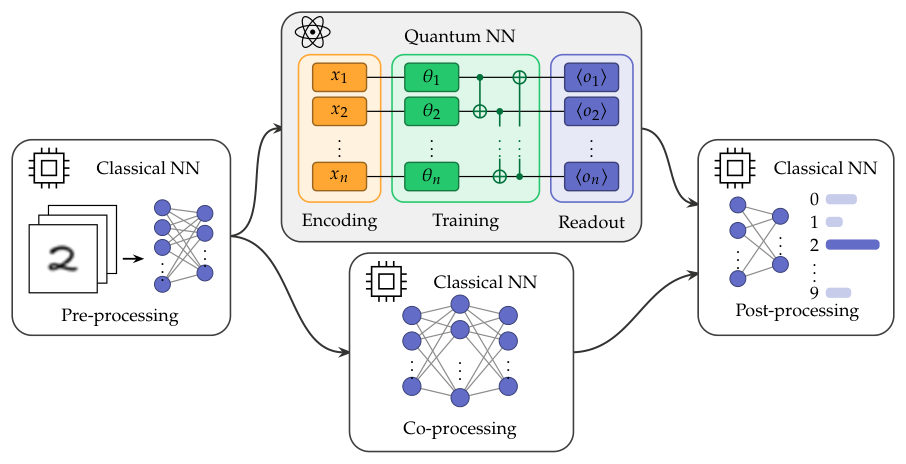
<figcaption class="paper-figure-caption"><b>Fig 1.</b> FIG. 1: Architecture example of a hybrid quantum neural network. A classical computer handles data pre- and post-processing, parallel co-processing, and parameter optimization, while a quantum circuit (parameterized by trainable angles) applies a unitary transformation in an exponentially large Hilbert space that, together with data encoding and measurement, realizes a nonlinear input–output map which can be hard to reproduce classically.</figcaption>
</figure>
<figure class="paper-figure-card">
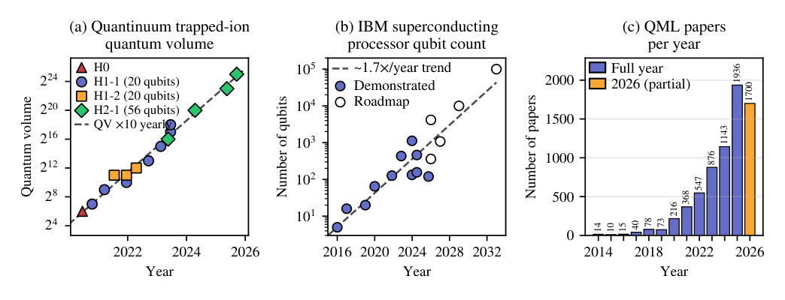
<figcaption class="paper-figure-caption"><b>Fig 2.</b> FIG. 2: Exponential growth trends in quantum hardware and Quantum Machine Learning (QML) research. (a) Quantum Volume of Quantinuum’s trapped-ion processors (H1 and H2 series) [1, 2]. (b) Physical qubit count of IBM’s superconducting processors; filled symbols are realized devices, open symbols are published roadmap targets [3–5]. (c) Number of papers published per year containing the phrase “Quantum Machine Learning” in the title or abstract, as indexed by OpenAlex [6] (covering arXiv preprints, journal articles, and conference proceedings). The orange bar denotes the most recent year (partial data from early July 2026).</figcaption>
</figure>
<figure class="paper-figure-card">
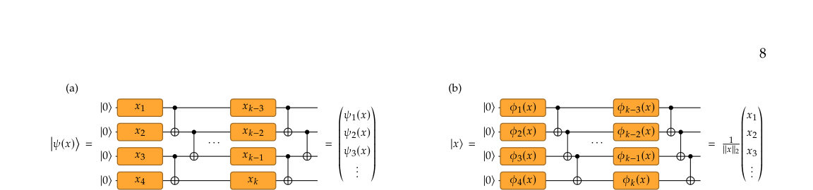
<figcaption class="paper-figure-caption"><b>Fig 3.</b> FIG. 3: The trade-off between the two main data-encoding strategies, illustrated on 𝑛= 4 qubits. (a) Angle encoding: parameters are trivially encoded into angles of a circuit, populating all 2𝑛basis states with amplitudes that are nonlinear (trigonometric) products of the data. (b) Amplitude encoding: circuit is derived numerically or analytically to reproduce a known state vector |𝑥⟩= Í 𝑖 𝑥𝑖 ||𝑥||2 |𝑒𝑖⟩such that the data sits directly in the amplitudes.</figcaption>
</figure>
<figure class="paper-figure-card">
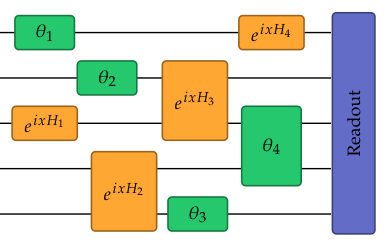
<figcaption class="paper-figure-caption"><b>Fig 4.</b> FIG. 4: QNN as a truncated Fourier series, Equation 13. The trainable blocks (green) determine the Fourier coefficients 𝑐𝜔(𝜃), while the data-encoding blocks (orange) determine the accessible frequency spectrum Ω.</figcaption>
</figure>
<figure class="paper-figure-card">
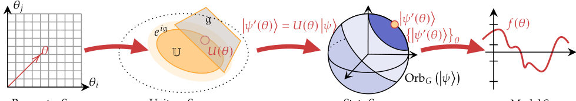
<figcaption class="paper-figure-caption"><b>Fig 5.</b> FIG. 6: The quantum model as a composition of maps, inspired by [141]. A choice of variational parameters 𝜃 determines the action of the QNN, represented as unitary transformation 𝑈(𝜃). Given an input 𝜓 in a Hilbert space, the QNN produces an output 𝜓′(𝜃) = 𝑈(𝜃) 𝜓 . Finally, by estimating the expectation value of some observable, one computes a quantum model 𝑓(𝜃).</figcaption>
</figure>
</div>

<p><strong>Summary.</strong> This review surveys Hybrid Quantum Neural Networks, a framework combining classical and quantum computing units to advance machine learning. It details how HQNNs are designed to utilize the exponential power of quantum circuits while remaining practical under current noisy hardware constraints. The paper aims to provide a roadmap for future research by structuring the state-of-the-art in this rapidly evolving field.</p>
<p><strong>Why it may be interesting.</strong> It directly addresses the practical intersection of advanced ML theory with near-term quantum hardware limitations (NISQ), which is crucial for developing algorithms applicable to open quantum systems simulations or measurement analysis.</p>
<details>
<summary>Detailed structure</summary>
<p><strong>Main problem.</strong> The field seeks new learning architectures beyond deep neural networks, leading to the investigation of Hybrid Quantum Neural Networks (HQNNs). These are designed to leverage quantum computation where it offers a principled advantage while delegating bulk processing to classical components.</p>
<p><strong>Main result.</strong> The review provides a structured view of HQNNs, summarizing their theoretical foundations and practical applications by combining classical feature extraction with quantum subroutines for enhanced learning capabilities.</p>
<p><strong>Method.</strong> The approach involves designing hybrid architectures that combine classical neural network layers (for high-dimensional feature processing) with variational quantum circuits (VQC) acting on exponentially large Hilbert spaces.</p>
<p><strong>Model / system.</strong> HQNNs are the core model, combining classical components with quantum information processing units. The underlying physical platform is constrained by the Noisy Intermediate Scale Quantum (NISQ) regime.</p>
<p><strong>Key observables.</strong> Model performance scaling laws, quantum advantage demonstration in specific tasks, and spectral structure representation.</p>
<p><strong>Important parameters / regimes.</strong> Quantum Volume, physical qubit count, computational budget, and the degree of noise/error inherent to NISQ devices.</p>
<p><strong>Assumptions / limitations.</strong> The primary assumption is that genuine quantum advantages exist for certain structured or quantum-native problems, even if current empirical evidence is mixed.</p>
<p><strong>Figures summary.</strong> Figure 1 illustrates the data flow in an HQNN (classical pre-/post-processing $
ightarrow$ unitary transformation $
ightarrow$ classical readout). Figure 2 shows exponential growth trends related to hardware metrics and research output.</p>
<p><strong>Paper structure.</strong> The paper reviews the theoretical foundations, surveys promising architectures, and examines implementation challenges of HQNNs for both machine learning and quantum machine learning communities.</p>
</details>
<details>
<summary>Abstract</summary>
<p>Artificial intelligence has been transformed by deep neural networks, yet the search for new learning architectures continues. Quantum machine learning offers one such direction, and hybrid quantum neural networks, which combine classical neural-network components with quantum information processing units, have emerged as a practical framework for near-term quantum technologies. However, the rapid development of the field across diverse architectures, benchmarks and hardware assumptions makes it difficult to assess the utility of various proposals, identify where genuine advantages may arise, and determine how practitioners can use these models. While recent benchmarks caution that such gains have not yet been demonstrated at scale, theoretical work has identified tasks on which quantum models hold provable advantages, and hybrid approaches have delivered promising results on practical problems using deliberately compact quantum components and substantially fewer trainable parameters. Here, we review hybrid quantum neural networks for the machine-learning and quantum-machine-learning communities. We summarize their main theoretical and methodological foundations, survey some of the most promising architectures developed so far, and examine their implementation challenges and reported performance. By consolidating these perspectives, this review provides a structured view of the state of the field and helps identify promising paths for future research and application-driven development.</p>
</details>
<p><sub><a href="#top">↑ back to top</a></sub></p>

<p><a id="paper-2608.02156"></a></p>
<h3 id="inhomogeneous-ising-model-on-2d-kagome-lattice-fermionic-field-approach"><a href="http://arxiv.org/abs/2608.02156v1">Inhomogeneous Ising Model on 2D kagomé Lattice: Fermionic field approach</a></h3>
<p><strong>Authors:</strong> Shahane A. Khachatryan, Zhidong Zhang, Ara G. Sedrakyan<br>
<strong>Type:</strong> theory · <strong>Category:</strong> statistical mechanics · <strong>PDF:</strong> <a href="https://arxiv.org/pdf/2608.02156v1">https://arxiv.org/pdf/2608.02156v1</a><br>
<strong>Analysis basis:</strong> full PDF text, analyzed in chunks
<strong>Topic relevance:</strong> <code>Keldysh / 2PI / non-Gaussian methods</code> <strong>1/5</strong> · <code>analog quantum simulation</code> <strong>1/5</strong></p>
<div class="figure-strip-hint">↔ Scroll figures horizontally</div>
<div class="paper-figures-scroll">
<figure class="paper-figure-card">
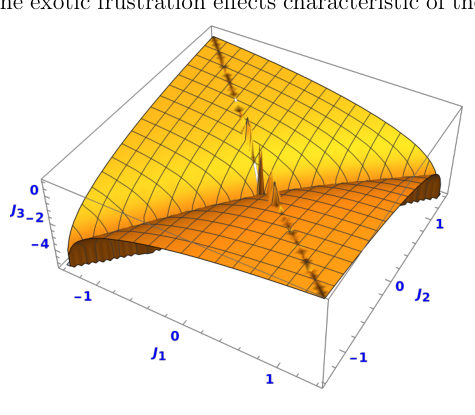
<figcaption class="paper-figure-caption"><b>Fig 1.</b> Figure 3: Critical subsurfaces on the real coordinate space {J1, J2, J3}</figcaption>
</figure>
</div>

<p><strong>Summary.</strong> This paper tackles the challenging problem of the inhomogeneous Ising model on a kagomé lattice using sophisticated fermionic field methods. By mapping it onto an eight-vertex model, the authors derive an exact equation for its critical phase transition surface. The results confirm the method's validity by reproducing known critical points in simpler limits.</p>
<p><strong>Why it may be interesting.</strong> The rigorous application of advanced mathematical techniques (fermionic representation, R-matrices) to solve classical statistical mechanics models provides deep insights into phase transitions governed by complex lattice geometries.</p>
<details>
<summary>Detailed structure</summary>
<p><strong>Main problem.</strong> The study investigates the critical behavior and thermodynamic properties of the two-dimensional inhomogeneous Ising model placed on a kagomé lattice.</p>
<p><strong>Main result.</strong> The authors derived an exact equation defining the critical surface in the parameter space of coupling constants, and confirmed that the model correctly reduces to known results for simpler lattices (square or 1D).</p>
<p><strong>Method.</strong> The core methodology involves mapping the Ising model onto a non-symmetric eight-vertex model and employing a fermionic field representation to evaluate the partition function via determinants.</p>
<p><strong>Model / system.</strong> The system is an inhomogeneous Ising Model on a 2D kagomé lattice, characterized by nearest-neighbor interactions defined by three distinct coupling constants ($J_1, J_2, J_3$).</p>
<p><strong>Key observables.</strong> Free energy, specific heat capacity, spontaneous magnetization, and the critical surface equation.</p>
<p><strong>Important parameters / regimes.</strong> The coupling constants ($J_1, J_2, J_3$), which define the anisotropy of the interactions.</p>
<p><strong>Assumptions / limitations.</strong> The analysis relies on mapping the system to an eight-vertex model structure and utilizing fermionic field techniques (e.g., Szegő's theorem for determinant evaluation) in the thermodynamic limit.</p>
<p><strong>Figures summary.</strong> Figure 1 illustrates the kagomé lattice structure; Figure 2 indexes the R-operator; and Figure 3 maps out critical subsurfaces in the $\{J_1, J_2, J_3\}$ parameter space.</p>
<p><strong>Paper structure.</strong> The paper proceeds by mapping the model to an eight-vertex form using a transfer matrix/R-matrix approach. It then utilizes fermionic variables to express the partition function as a determinant product, leading to the determination of the critical surface equation and subsequent calculation of thermodynamic quantities in various limits.</p>
</details>
<details>
<summary>Abstract</summary>
<p>We investigate the two-dimensional inhomogeneous Ising model (2DIM) on the kagom'e lattice by mapping it onto a particular non-symmetric eight-vertex model and constructing the corresponding $R$-matrix. Using a fermionic representation, we evaluate the partition function and derive explicit expressions for the main thermodynamic quantities. In the thermodynamic limit, we obtain an exact equation for the critical surface determining the phase transition of the model. We also calculate the free energy, specific heat, and spontaneous magnetization in the ferromagnetic case. Furthermore, we show that when one or two coupling constants vanish, the model reduces, respectively, to the square-lattice and one-dimensional Ising models. In both limits, our results reproduce the corresponding exact critical couplings and free energies.</p>
</details>
<p><sub><a href="#top">↑ back to top</a></sub></p>

<p><a id="paper-2608.00741"></a></p>
<h3 id="quantum-speedups-for-testing-similar-means"><a href="http://arxiv.org/abs/2608.00741v1">Quantum Speedups for Testing Similar Means</a></h3>
<p><strong>Authors:</strong> Chengshen Gao, Yongzhen Xu, Shenggen Zheng, Lvzhou Li<br>
<strong>Type:</strong> theory · <strong>Category:</strong> quantum information and computing · <strong>PDF:</strong> <a href="https://arxiv.org/pdf/2608.00741v1">https://arxiv.org/pdf/2608.00741v1</a><br>
<strong>Analysis basis:</strong> full PDF text, analyzed in chunks
<strong>Topic relevance:</strong> <code>entanglement &amp; information structure</code> <strong>1/5</strong> · <code>quantum measurements</code> <strong>1/5</strong></p>
<div class="figure-strip-hint">↔ Scroll figures horizontally</div>
<div class="paper-figures-scroll">
<figure class="paper-figure-card">
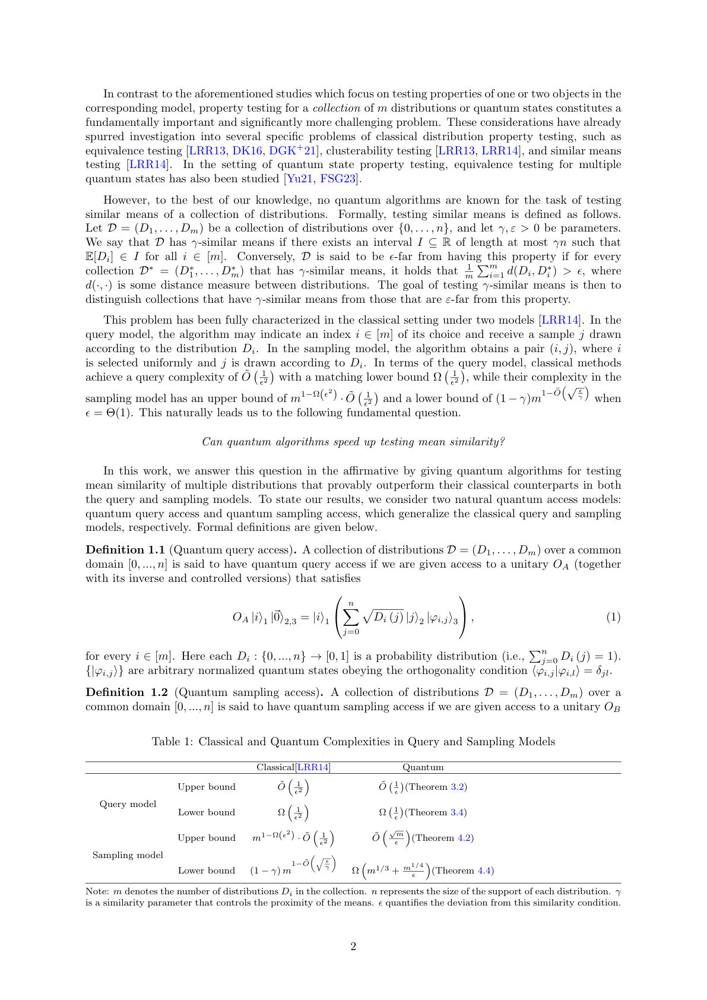
<figcaption class="paper-figure-caption"><b>Fig 1.</b> Low-resolution page preview, page 2</figcaption>
</figure>
<figure class="paper-figure-card">
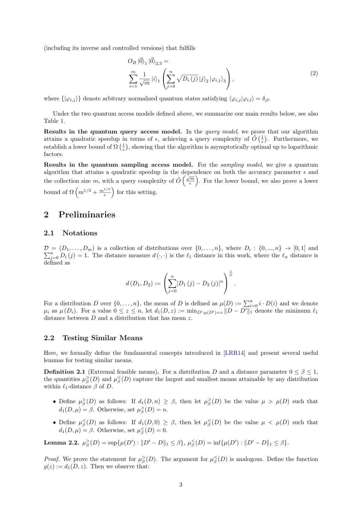
<figcaption class="paper-figure-caption"><b>Fig 2.</b> Low-resolution page preview, page 3</figcaption>
</figure>
<figure class="paper-figure-card">
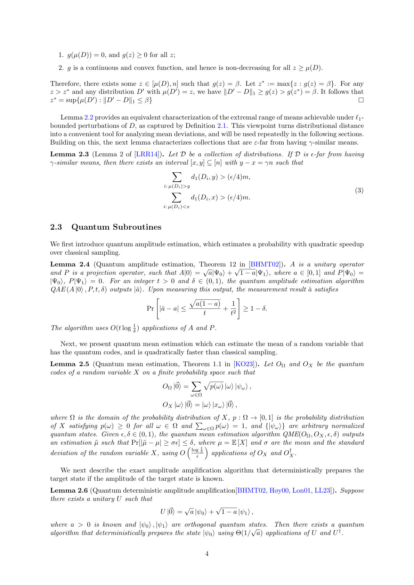
<figcaption class="paper-figure-caption"><b>Fig 3.</b> Low-resolution page preview, page 4</figcaption>
</figure>
<figure class="paper-figure-card">
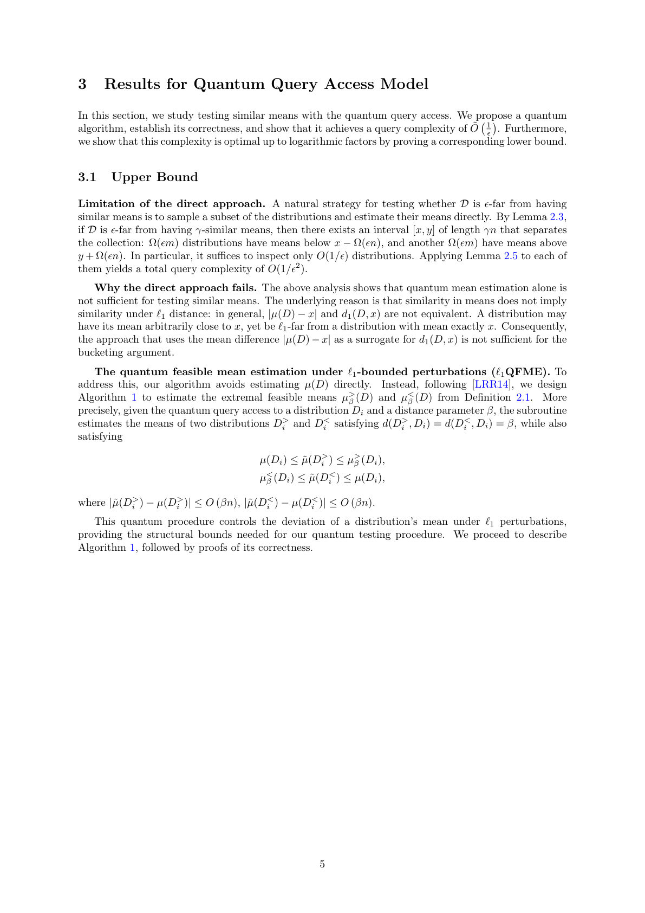
<figcaption class="paper-figure-caption"><b>Fig 4.</b> Low-resolution page preview, page 5</figcaption>
</figure>
<figure class="paper-figure-card">
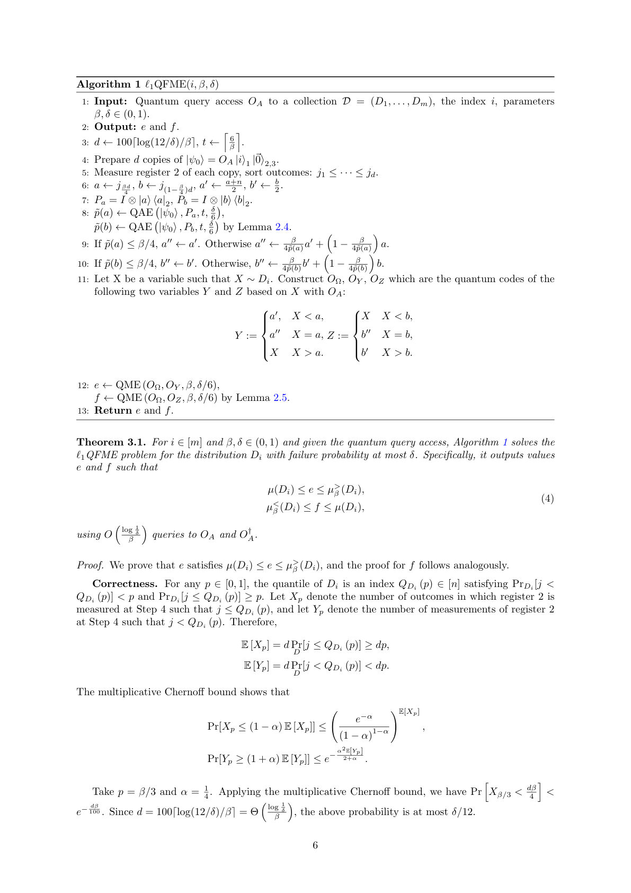
<figcaption class="paper-figure-caption"><b>Fig 5.</b> Low-resolution page preview, page 6</figcaption>
</figure>
</div>

<p><strong>Summary.</strong> This paper develops quantum algorithms to test whether multiple probability distributions share similar means, extending property testing beyond pairs of distributions. It achieves provable quadratic speedups over classical methods in both query and sampling access models. The results establish optimal complexity bounds for this multi-distribution mean similarity testing problem.</p>
<p><strong>Why it may be interesting.</strong> This work directly tackles the boundary between classical and quantum computational advantages in a fundamental area of information theory—property testing—which is highly relevant for understanding the limits of quantum computation.</p>
<details>
<summary>Detailed structure</summary>
<p><strong>Main problem.</strong> The work addresses the open question of whether quantum algorithms provide speedups for property testing when comparing $m \ge 3$ distributions, specifically testing if they share similar means.</p>
<p><strong>Main result.</strong> They design quantum algorithms achieving complexities $    ilde{O}(1/\epsilon)$ (query model) and $    ilde{O}(\sqrt{m}/\epsilon)$ (sampling model), demonstrating quadratic speedups over classical bounds and establishing corresponding lower bounds.</p>
<p><strong>Method.</strong> The approach involves adapting techniques like Quantum Amplitude Estimation (QAE) to estimate extremal feasible means under $\ell_1$-bounded perturbations, avoiding direct mean estimation which is insufficient.</p>
<p><strong>Model / system.</strong> The problem is framed abstractly using quantum access models: the Query Model (unitary $O_A$) and the Sampling Model (unitary $O_B$). The underlying objects are classical probability distributions over $\{0, \dots, n\}$.</p>
<p><strong>Key observables.</strong> Mean of a distribution $\mu(D)$, $\ell_1$ distance between distributions, and the deviation parameter $\epsilon$.</p>
<p><strong>Important parameters / regimes.</strong> $m$ (number of distributions), $\epsilon$ (deviation tolerance), and $\gamma$ (similarity parameter).</p>
<p><strong>Assumptions / limitations.</strong> The analysis relies on structural separation lemmas that characterize collections of distributions far from mean similarity, enabling the use of QAE/QME.</p>
<p><strong>Figures summary.</strong> Table 1 summarizes the derived classical versus quantum complexities for both query and sampling models.</p>
<p><strong>Paper structure.</strong> The paper first establishes the problem in two quantum access models. It then develops specialized quantum algorithms (like $\ell_1$QFME) to estimate necessary bounds, culminating in theorems that prove the optimal complexity bounds for testing mean similarity in both models.</p>
</details>
<details>
<summary>Abstract</summary>
<p>Property testing of distributions is a central topic in information theory, learning theory, and statistics. While quantum algorithms are known to offer significant speedups for property testing of a single distribution or a pair of distributions, it is unclear whether quantum algorithms provide speedups for property testing of $m$ ($m\geq 3$) distributions. This work focuses on quantum algorithms for testing whether $m$ distributions have similar means or are $ε$-far from mean similarity under two models. In the query model, the algorithm can choose which distribution to sample from, whereas in the sampling model, the distributions are selected uniformly. We design quantum algorithms with complexities $\tilde{O}(1/ε)$ (the $\tilde{O}$ notation hides poly-logarithmic factors) and $\tilde{O}(\sqrt{m}/ε)$ in the query and sampling models, respectively, achieving quadratic speedups over the classical counterparts. We further establish quantum lower bounds of $Ω\left(1/ε\right)$ and $Ω\rbra{m^{1/3}+\frac{m^{1/4}}ε}$ for the query model and the sampling model, demonstrating the optimality of our quantum algorithms in terms of the dependence on $ε$ up to logarithmic factors.</p>
</details>
<p><sub><a href="#top">↑ back to top</a></sub></p>

<p><a id="paper-2608.01723"></a></p>
<h3 id="ring-optimized-m-apsk-modulation-for-discrete-modulated-cv-qkd"><a href="http://arxiv.org/abs/2608.01723v1">Ring Optimized M-APSK Modulation for Discrete Modulated CV-QKD</a></h3>
<p><strong>Authors:</strong> Seonguk Kim, Jun Heo<br>
<strong>Type:</strong> theory · <strong>Category:</strong> quantum information and computing · <strong>PDF:</strong> <a href="https://arxiv.org/pdf/2608.01723v1">https://arxiv.org/pdf/2608.01723v1</a><br>
<strong>Analysis basis:</strong> full PDF text, analyzed in chunks
<strong>Topic relevance:</strong> <code>Keldysh / 2PI / non-Gaussian methods</code> <strong>1/5</strong> · <code>entanglement &amp; information structure</code> <strong>1/5</strong></p>
<div class="figure-strip-hint">↔ Scroll figures horizontally</div>
<div class="paper-figures-scroll">
<figure class="paper-figure-card">
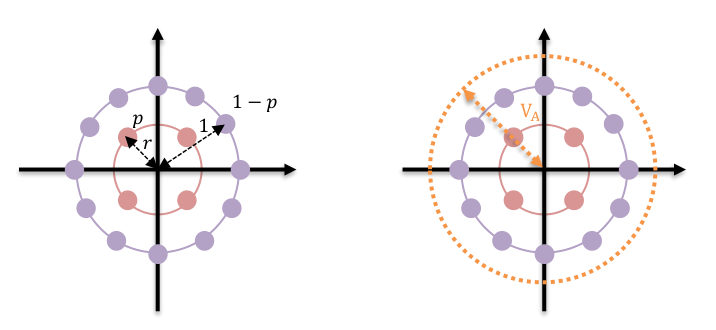
<figcaption class="paper-figure-caption"><b>Fig 1.</b> Fig. 1 Definition of radius, probability and modulation variance for the 16 APSK (4+12) constellation.</figcaption>
</figure>
<figure class="paper-figure-card">
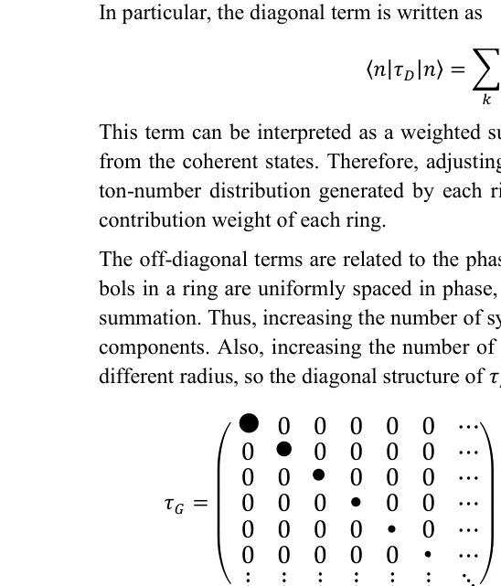
<figcaption class="paper-figure-caption"><b>Fig 2.</b> Fig. 2 Matrix structure of 𝜏𝐺 and 𝜏𝐷 in the Fock basis</figcaption>
</figure>
<figure class="paper-figure-card">
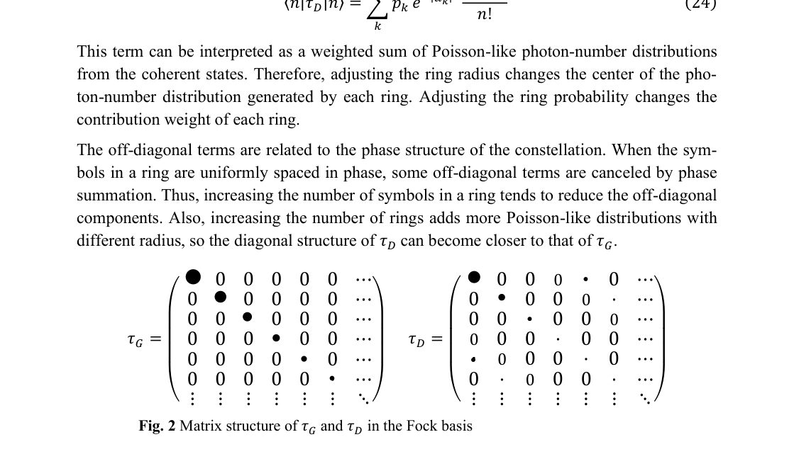
<figcaption class="paper-figure-caption"><b>Fig 3.</b> Fig. 2 compares the average density matrices of Gaussian modulation and discrete modula- tion in the Fock basis. The Gaussian average density matrix 𝜏𝐺 has only diagonal terms, which follow a thermal photon-number distribution. In contrast, the discrete average density matrix 𝜏𝐷 is illustrated using a 4-PSK example and contains both diagonal and off-diagonal terms. The diagonal terms of 𝜏𝐷 are weighted sums of Poisson-like distributions from coher- ent states, while the off-diagonal terms are determined by the phase structure and the number of symbols in the ring. Therefore, the proposed ring radius and ring probability optimization can be interpreted as a structural adjustment that makes...</figcaption>
</figure>
<figure class="paper-figure-card">
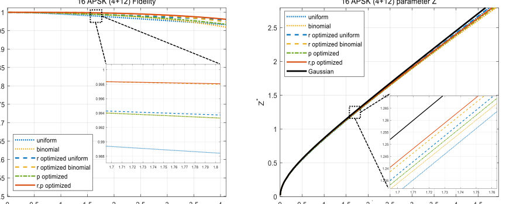
<figcaption class="paper-figure-caption"><b>Fig 4.</b> Fig. 3 Structural analysis of 16-APSK (4+12) for modulation variance optimization at 𝐿= 30 km.</figcaption>
</figure>
<figure class="paper-figure-card">
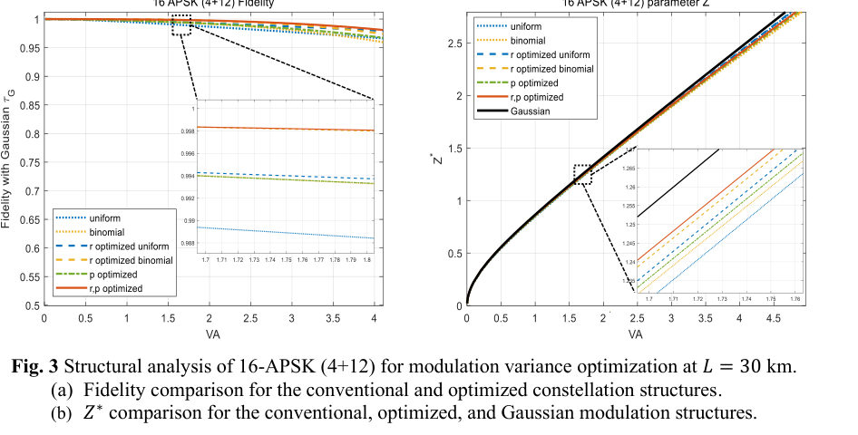
<figcaption class="paper-figure-caption"><b>Fig 5.</b> Fig. 3(a) shows the fidelity 𝐹(𝜏𝐷, 𝜏𝐺) as a function of the modulation variance 𝑉𝐴 at a trans- mission distance of 30 km. The 𝑟-optimized and 𝑟, 𝑝-optimized structures show higher fideli- ty than the non-optimized structures. This indicates that adjusting the ring radius and ring probability makes the discrete average state 𝜏𝐷 closer to the Gaussian average state 𝜏𝐺. In ad- dition, the binomial structure and the 𝑝-optimized structure show similar fidelity values. This result suggests that the conventional binomial probability is already close to a good probabil- ity shaping for 16-APSK (4+12).</figcaption>
</figure>
</div>

<p><strong>Summary.</strong> This paper proposes a novel optimization method for the constellation structure in discrete-modulated CV-QKD. By jointly optimizing ring radii and probabilities, they significantly improve the finite-size secret key rate compared to standard APSK structures. The core methodology involves using Gram matrix analysis to characterize the average state's deviation from ideal Gaussian modulation.</p>
<p><strong>Why it may be interesting.</strong> This work directly addresses quantum information security protocols (QKD) using advanced mathematical techniques (Gram matrix, fidelity analysis) to optimize physical resource constraints (constellation geometry).</p>
<details>
<summary>Detailed structure</summary>
<p><strong>Main problem.</strong> The paper aims to optimize the constellation structure of discrete-modulated continuous variable quantum key distribution (DM-CV-QKD) to maximize the finite-size secret key rate.</p>
<p><strong>Main result.</strong> Optimizing the ring radius ratio and probability jointly extends the maximum transmission distance for 16-APSK by approximately 15% compared to conventional binomial structures.</p>
<p><strong>Method.</strong> The optimization involves maximizing the secret key rate by adjusting constellation parameters, using the Gram matrix method to analyze the average state spectrum, and comparing results via quantum fidelity.</p>
<p><strong>Model / system.</strong> The system is DM-CV-QKD, where Alice's signals are restricted to a finite set of coherent states forming an M-APSK constellation. Performance is benchmarked against ideal Gaussian modulation.</p>
<p><strong>Key observables.</strong> Finite-size secret key rate ($K$), quantum fidelity ($\mathcal{F}$), and the correlation parameter ($Z^*$).</p>
<p><strong>Important parameters / regimes.</strong> Constellation size (M), transmission distance ($L$), modulation variance ($V_A$), ring radius ratio ($\mathbf{r}$), and ring probability ($\mathbf{p}$).</p>
<p><strong>Assumptions / limitations.</strong> The analysis uses a finite-size secret key rate model, and the Gram matrix method is employed to approximate the spectrum of the average state $ au$ by avoiding full diagonalization in the Fock basis.</p>
<p><strong>Figures summary.</strong> Figures compare fidelity ($\mathcal{F}$) and $Z^*$ between optimized and conventional structures; Figure 4 shows the distance gain for the secret key rate vs. transmission distance.</p>
<p><strong>Paper structure.</strong> The paper introduces the problem, details the mathematical framework using the Gram matrix to analyze the average state $  au$, presents the joint optimization procedure over constellation parameters ($\mathbf{r}, \mathbf{p}$), and concludes by quantifying the performance gains in terms of increased key rate and transmission distance.</p>
</details>
<details>
<summary>Abstract</summary>
<p>This paper proposes a multi ring M-APSK constellation optimization method for discrete-modulated continuous variable quantum key distribution. Unlike conventional APSK structures with fixed ring spacing and predefined ring probabilities, the proposed method optimizes the ring radius ratio and ring probability to improve the finite-size secret key rate. A method based on the Gram matrix is used to calculate the nonzero spectrum of the average state $τ$, and fidelity is used to compare the optimized discrete average state with the Gaussian average state. The results show that the proposed structure extends the maximum transmission distance of 16-APSK by approximately 15% compared with the conventional binomial APSK structure. The optimization gain is larger for small size APSK constellations, where the average state has a larger structural gap from Gaussian modulation.</p>
</details>
<p><sub><a href="#top">↑ back to top</a></sub></p>

<p><a id="paper-2608.00170"></a></p>
<h3 id="shape-of-wigner-crystals-and-hole-self-doping-in-a-mexican-hat-dispersion"><a href="http://arxiv.org/abs/2608.00170v1">Shape of Wigner Crystals and Hole Self-Doping in a Mexican-Hat Dispersion</a></h3>
<p><strong>Authors:</strong> Minho Luke Kim, Xiao-Gang Wen<br>
<strong>Type:</strong> theory · <strong>Category:</strong> strongly correlated electrons · <strong>PDF:</strong> <a href="https://arxiv.org/pdf/2608.00170v1">https://arxiv.org/pdf/2608.00170v1</a><br>
<strong>Analysis basis:</strong> full PDF text, analyzed in chunks
<strong>Topic relevance:</strong> <code>Keldysh / 2PI / non-Gaussian methods</code> <strong>1/5</strong> · <code>analog quantum simulation</code> <strong>1/5</strong></p>
<div class="figure-strip-hint">↔ Scroll figures horizontally</div>
<div class="paper-figures-scroll">
<figure class="paper-figure-card">
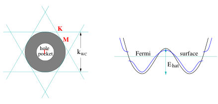
<figcaption class="paper-figure-caption"><b>Fig 1.</b> Figure 1: (Left) In the weak-interaction limit, an induced CDW may favor a lattice constant that matches the outer edge of the ring-like Fermi surface associated with the Mexican-hat dispersion, thereby gapping out the outer Fermi surface. The inner Fermi surface remains, giving rise to an mWC state. The shaded region in momentum space denotes the occupied electronic states, and kWC is the momentum transfer generated by the WC potential. (Right) Schematic Mexican-hat dispersion and the gapping of the outer Fermi surface by the WC potential.</figcaption>
</figure>
<figure class="paper-figure-card">
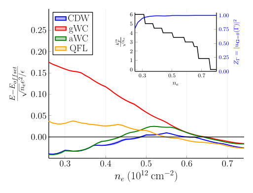
<figcaption class="paper-figure-caption"><b>Fig 2.</b> Figure 2: Energies of the commensurate crystal ans¨atze compared to the QFL ansatz. The CDW ansatz and aWC ansatz are much more energetically favorable relative to the standard gWC ansatz as it accommodates the Mexican hat dispersion, with CDW performing better than aWC at intermediate densities while converging at low densities. Range of errors are given in the ribbon. The density-dependent offset function Eoffset = (−3.23 + 2.71ne −1.60n2 e) e2√ne</figcaption>
</figure>
<figure class="paper-figure-card">
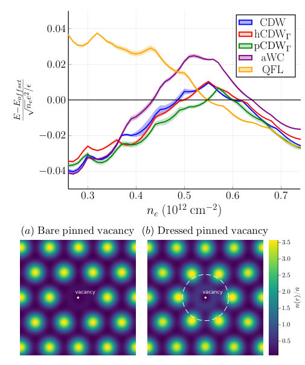
<figcaption class="paper-figure-caption"><b>Fig 3.</b> Figure 3: (Top) Energies of the commensurate CDW and aWC compared with those of one-vacancy hCDW and dressed pCDW states with a hole at Γ, where the hole creation is most energetically competitive. We find that the hCDWΓ is energetically competitive from around 0.4 × 1012 cm−2. The dressed pCDWΓ state performs even better with noticeable improvements compared to CDW and hCDWΓ. Range of errors are given in the ribbon. The same offset function is used. (Bottom): Visualization of the single-determinant density for the bare pinned vacancy D0({ri}) (left) and the dressed pinned vacancy F0({ri})D0({ri}) (right) for Ap = 1.2 and ξp = 0.8 in √ne = 1 units, which are the optimized values for the...</figcaption>
</figure>
<figure class="paper-figure-card">
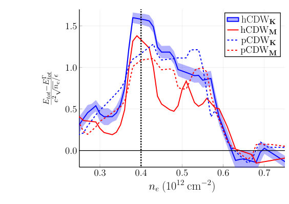
<figcaption class="paper-figure-caption"><b>Fig 4.</b> Figure 4: Difference of the total energy of the system in units of Coulomb energy for hCDWK and hCDWM states against hCDWΓ (in lines) and pCDWK and pCDWM states against pCDWΓ (in dashed lines). The energy difference can be used to fit coefficients of the effective hole tight-binding model for the nearest and next-nearest neighbor terms. Errors for hCDWK is displayed; other states have similar size of errors.</figcaption>
</figure>
<figure class="paper-figure-card">
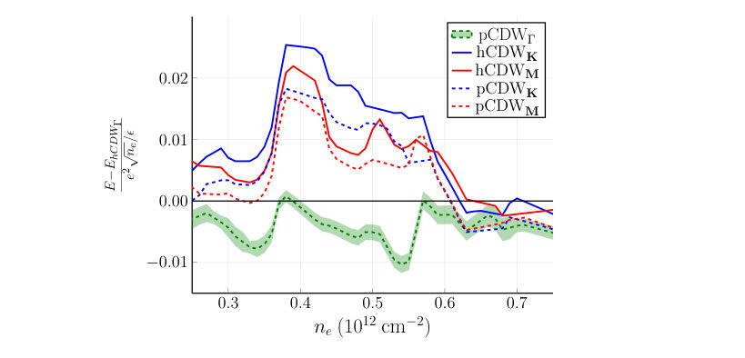
<figcaption class="paper-figure-caption"><b>Fig 5.</b> Figure 5: Energies of the doped CDW ans¨atze per electron compared against hCDWΓ. The effect of polarons is substantial, showing between 0.5-1% of Coulomb energy per particle for all symmetry point holes compared to their hCDW counterparts.</figcaption>
</figure>
</div>

<p><strong>Summary.</strong> The authors study Wigner crystal formation in a system with a Mexican-hat dispersion by comparing multiple theoretical ansätze. Using Variational Monte Carlo, they find that including polaron screening effects significantly stabilizes the hole-doped state compared to simpler models. This suggests that electron-vacancy correlations are crucial for understanding the transition into self-doped insulating phases.</p>
<p><strong>Why it may be interesting.</strong> This work provides advanced many-body techniques (VMC with Jastrow/Polaron factors) applied to strongly correlated electron systems, offering insights into how correlation effects stabilize exotic phases like self-doped insulators.</p>
<details>
<summary>Detailed structure</summary>
<p><strong>Main problem.</strong> The study investigates Wigner crystals (WCs) formed by strong Coulomb interactions within a system characterized by a Mexican-hat dispersion, specifically examining the possibility of hole self-doping near $k=0$.</p>
<p><strong>Main result.</strong> Incorporating polaron screening effects significantly stabilizes the doped state ($    ext{pCDW}\Gamma$) compared to simpler models, suggesting that hole self-doping is energetically favorable near the WC transition.</p>
<p><strong>Method.</strong> Variational Monte Carlo (VMC) calculations are employed using complex Slater-Jastrow and Polaron-dressed wavefunctions to calculate ground-state energies for various competing electronic phases.</p>
<p><strong>Model / system.</strong> The system models electrons governed by a Mexican-hat dispersion $\epsilon_k = c_2k^2 + c_4k^4$. The physics explores the competition between Fermi liquid, Wigner crystal, and self-doped states under strong Coulomb repulsion.</p>
<p><strong>Key observables.</strong> Variational energies ($E$), effective hole mass ($m_h^*$), and expectation values of kinetic energy ($\langle k^2 
angle$, $\langle k^4 
angle$).</p>
<p><strong>Important parameters / regimes.</strong> Electron density ($n_e$) ranging from $0.25$ to $0.75 	imes 10^{12} 	ext{ cm}^{-2}$; dispersion parameters $c_2, c_4$.</p>
<p><strong>Assumptions / limitations.</strong> The analysis relies on constructing sophisticated trial wavefunctions (gWC, aWC, pCDW) and assumes that the system's behavior can be captured by these correlated ansätze.</p>
<p><strong>Figures summary.</strong> Figures compare the relative energies of different CDW ansätze ($  ext{gWC}$ vs. $ ext{aWC}$), and critically show that the polaron-dressed state ($    ext{pCDW}\Gamma$) has a lower energy than the bare hole-doped state ($ ext{hCDW}\Gamma$).</p>
<p><strong>Paper structure.</strong> The paper develops theoretical tools for calculating expectation values (Laplacian, kinetic energy) for complex correlated states. It then applies these methods to compare the energetics of various Wigner crystal and doped CDW ansätze, culminating in a quantitative comparison showing the advantage of polaron dressing.</p>
</details>
<details>
<summary>Abstract</summary>
<p>We study Wigner crystals (WCs) induced by a strong Coulomb interaction from the ring-like Fermi surface of a Mexican-hat dispersion $ε_k= c_2k^2+c_4k^4$. We design orbital shape in order to minimize the energy of the WC, and find that a low ground-state energy requires an orbital shape with a depletion of electrons near $k=0$. To capture the Coulomb-induced correlations, we include a Jastrow factor as well as a factor describing the correlation between electrons and doped vacancies. Using variational Monte Carlo calculations, we calibrate the effective band parameters $c_2$ and $c_4$ to reproduce the two transitions observed experimentally as the electron density is lowered: from a spin-valley-polarized Fermi liquid with a disk-like Fermi surface, to one with a ring-like Fermi surface, and finally to a WC. We find that, even with an optimized orbital shape that depletes electrons near $k=0$, a WC with hole self-doping near $k=0$ can still be energetically favorable near the WC transition, provided that the electron-vacancy correlation is included. We also estimate the dispersion of the doped hole.</p>
</details>
<p><sub><a href="#top">↑ back to top</a></sub></p>

<p><a id="paper-2608.01308"></a></p>
<h3 id="sharp-quantum-capacity-thresholds-exponential-strong-converses-for-degradable-and-antidegradable-channels"><a href="http://arxiv.org/abs/2608.01308v1">Sharp Quantum Capacity Thresholds: Exponential Strong Converses for Degradable and Antidegradable Channels</a></h3>
<p><strong>Authors:</strong> Tulja Varun Kondra, Raphael Brinster, Hermann Kampermann, Dagmar Bruß, Nikolai Wyderka<br>
<strong>Type:</strong> theory · <strong>Category:</strong> quantum information and computing · <strong>PDF:</strong> <a href="https://arxiv.org/pdf/2608.01308v1">https://arxiv.org/pdf/2608.01308v1</a><br>
<strong>Analysis basis:</strong> full PDF text, analyzed in chunks
<strong>Topic relevance:</strong> <code>Keldysh / 2PI / non-Gaussian methods</code> <strong>1/5</strong> · <code>entanglement &amp; information structure</code> <strong>1/5</strong></p>
<div class="figure-strip-hint">↔ Scroll figures horizontally</div>
<div class="paper-figures-scroll">
<figure class="paper-figure-card">
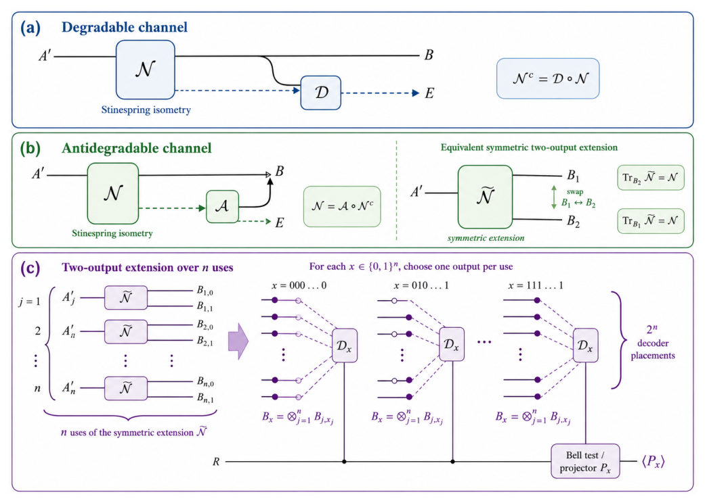
<figcaption class="paper-figure-caption"><b>Fig 1.</b> FIG. 1. Degradable and antidegradable channels, and the decoder-placement mechanism. (a) N is degradable when the environment output can be simulated from the receiver output by a degrading channel D, so that N c = D ◦N. (b) N is antidegradable when the receiver output can be simulated from the environment, N = A ◦N c; equivalently, it admits a symmetric two-output extension e N : A′ →B0B1 whose two marginal channels both equal N. (c) Applying the symmetric extension independently to n channel uses produces two receiver-like outputs at each position. Every string x ∈{0, 1}n selects one output from each pair and hence defines a subsystem Bx = Nn j=1 Bj,xj on which a copy Dx of the original...</figcaption>
</figure>
<figure class="paper-figure-card">
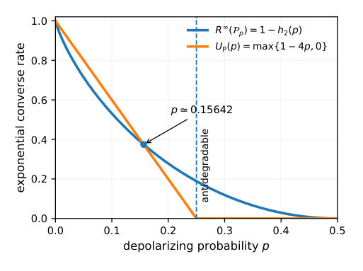
<figcaption class="paper-figure-caption"><b>Fig 2.</b> FIG. 2. Exponential strong-converse bounds for the qubit depolarizing channel. For Pp(ρ) = (1 −p)ρ + p 3 P3 i=1 σiρσi, our Pauli-channel bound is UP(p) = max{1 − 4p, 0}, while the regularized channel Rains information is the piecewise function in Eq. (51). The two cross at p ≃0.15642, above which our bound is strictly tighter. Our bound vanishes at the exact antidegradability threshold p = 1/4, whereas the Rains bound stays strictly positive there.</figcaption>
</figure>
</div>

<p><strong>Summary.</strong> This paper establishes rigorous, all-code exponential strong converse theorems for quantum channels, particularly focusing on degradable and antidegradable types. By proving that rates exceeding capacity result in exponentially decaying fidelity, it resolves long-standing open problems in quantum information theory. The methods involve sophisticated mathematical tools from operator theory and polynomial approximation.</p>
<p><strong>Why it may be interesting.</strong> This work provides fundamental, sharp bounds on quantum communication limits that are crucial for understanding the ultimate performance thresholds of any quantum information processing protocol.</p>
<details>
<summary>Detailed structure</summary>
<p><strong>Main problem.</strong> The central problem is establishing strong converse theorems for quantum channels, specifically determining if communication above the channel's quantum capacity remains possible when a fixed non-maximal error is tolerated.</p>
<p><strong>Main result.</strong> The authors prove an all-code exponential strong converse for finite-dimensional degradable and antidegradable channels, showing that rates above capacity lead to exponentially decaying fidelity.</p>
<p><strong>Method.</strong> The proof employs advanced techniques involving the Choi-Jamiołkowski correspondence, constructing weight matrices from multilinear polynomials, and bounding operator norms related to channel placements.</p>
<p><strong>Model / system.</strong> The study focuses on general noisy quantum channels ($N: A' 	o B$), with specific attention paid to degradable (where capacity is single-letter) and antidegradable channels. The analysis uses Bell-target schemes for encoding.</p>
<p><strong>Key observables.</strong> Fidelity ($F_n$) of the coding scheme, which decays exponentially with the number of channel uses ($n$).</p>
<p><strong>Important parameters / regimes.</strong> The rate $r$ relative to the quantum capacity $Q(N)$, and the dimensionality parameters of the channels.</p>
<p><strong>Assumptions / limitations.</strong> The analysis relies on bounding operator norms using polynomial approximations (e.g., approximating $    ext{NOR}_n$) and assuming specific structures for channel extensions.</p>
<p><strong>Figures summary.</strong> Figure 1 illustrates the definitions of degradable/antidegradable channels and the use of a symmetric two-output extension ($e_N$) to generate overlapping placements $\{P_x\}$ central to the argument.</p>
<p><strong>Paper structure.</strong> The paper progresses by first defining the strong converse problem, then developing technical tools (like bounding $\lVert \mathbf{A} 
Vert_\infty$ using weight matrices derived from polynomial approximations), and finally applying these tools sequentially to prove the exponential strong converse for antidegradable channels, followed by degradable channels.</p>
</details>
<details>
<summary>Abstract</summary>
<p>The quantum capacity of a noisy channel quantifies the maximum rate at which quantum information can be transmitted reliably. For general channels, its evaluation requires an optimization over arbitrarily many channel uses. Degradable channels form a central exception: their capacity is given by the single-letter coherent information, while antidegradable channels have zero capacity. Nevertheless, even for these fundamental classes, it has remained open whether communication above capacity becomes possible when a fixed non-maximal error is tolerated. Here we resolve this problem by proving an exponential strong converse for every finite-dimensional degradable and antidegradable channel: at any rate above capacity, the fidelity of every coding scheme decays exponentially with the number of channel uses. As an immediate consequence, we establish the first all-code exponential strong converse for the quantum erasure channel throughout its full parameter range, strengthening previous results that applied only to almost all codes. We also show that exponential strong-converse bounds are preserved under receiver post-processing. This yields efficiently computable semidefinite-programming bounds for arbitrary finite-dimensional channels, improved bounds for Pauli channels, and an exact exponential strong converse for a nondegradable multilevel amplitude-damping family.</p>
</details>
<p><sub><a href="#top">↑ back to top</a></sub></p>

<p><a id="paper-2608.00599"></a></p>
<h3 id="spin-selectivity-induced-by-non-collinear-spins-in-rashba-wires"><a href="http://arxiv.org/abs/2608.00599v1">Spin selectivity induced by non-collinear spins in Rashba wires</a></h3>
<p><strong>Authors:</strong> Luciano Jacopo D'Onofrio, Maria Teresa Mercaldo, Mario Cuoco, Carmine Ortix<br>
<strong>Type:</strong> theory · <strong>Category:</strong> other · <strong>PDF:</strong> <a href="https://arxiv.org/pdf/2608.00599v1">https://arxiv.org/pdf/2608.00599v1</a><br>
<strong>Analysis basis:</strong> full PDF text, analyzed in chunks
<strong>Topic relevance:</strong> <code>Keldysh / 2PI / non-Gaussian methods</code> <strong>1/5</strong> · <code>spintronics-quantum-optics interface</code> <strong>1/5</strong></p>
<div class="figure-strip-hint">↔ Scroll figures horizontally</div>
<div class="paper-figures-scroll">
<figure class="paper-figure-card">
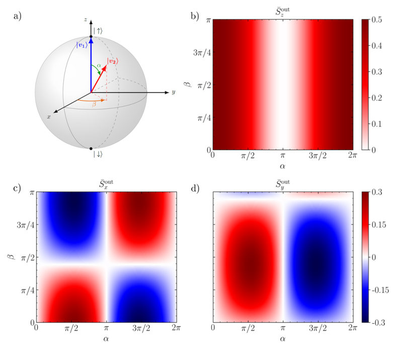
<figcaption class="paper-figure-caption"><b>Fig 1.</b> FIG. 1. Spin polarization acquired by unpolarized electrons perfectly transmitted through a Rashba wire with non-collinear spin states. (a) Bloch sphere representation of the spins of the right-moving states |v1⟩and |v2⟩at the Fermi level with α and β the polar and azimuthal angle of the |v2⟩state. (b–d) Contour maps of the net spin polarization components in the metallic drain ¯Sout z (b), ¯Sout x (c), and ¯Sout y (d) acquired by unpolarized electrons as a function of α and β.</figcaption>
</figure>
<figure class="paper-figure-card">

<figcaption class="paper-figure-caption"><b>Fig 2.</b> FIG. 2. Spin selectivity in an electron–hole wire with Rashba spin-orbit coupling. (a) Energy band dispersion assuming model parameters d2k2 0/ϵ0 = 1/200, a1yk0/ϵ0 = 1.8, c0/ϵ0 = 90, γ = π/4, and d0/ϵ0 = 35. We have introduced the characteristic energy scale ϵ0 and a reference momentum k0. The color scale encodes the orbital character of the bands. (b) Spin expectation value Sx summed over the two right-moving states as a function of the intraband Rashba coupling strength a1y for different values of the interorbital mixing strength c0. We have set the energy separation d0 = 70ϵ0 and the Fermi energy ϵF = 10ϵ0. (c)-(d) Same as a function of the angle parameter γ (c) and as a function of the...</figcaption>
</figure>
<figure class="paper-figure-card">

<figcaption class="paper-figure-caption"><b>Fig 3.</b> FIG. 3. Spin selectivity in a two-subband InAs nanowire. (a) Energy dispersion for the model Hamiltonian Eq.(1). (b) Spatial evolution of the spin ˆy component injected from a two-subband metallic lead (region I) and collected in the outer metallic lead (region III). The scattering region II corresponds to the two-subband InAs nanowire. The top panel corresponds to the injection of an ↑spin, while the middle panel is for an ↓spin. The net spin polarization resulting from the injection of unpolarized electrons is shown in the bottom panel. We have set the InAs nanowire length to dx = 10 µm and the subband weight ρ2/ρ1 = 1/2. (c) Net outgoing spin polarization as a function of the injection...</figcaption>
</figure>
<figure class="paper-figure-card">

<figcaption class="paper-figure-caption"><b>Fig 4.</b> FIG. 4. Non-collinear spins and spin selectivity in an oxide nanowire with orbital Rashba and spin-orbit coupling. The nanowire is modelled by the Hamiltonian H = Ak2 x + αORkx ˆLy + λˆL · ˆS + δx ˆL2 x + δy ˆL2 y + δz ˆL2 z with ˆLx,y,z the L = 1 angular momentum operators. (a) Density plot of the ˆSy expectation value summed over the six right-moving states in the atomic spin-orbit coupling strength λ, orbital Rashba strength αOR plane. We have set A = 0.15ϵ0/k2 0 with ϵ0 = 38meV and k0 = 1nm−1, and the crystal field parameters δx = −0.2ϵ0, δy = −0.2ϵ0, δz = 0.3ϵ0. (b) Total emitted spin polarization for incoming unpolarized spins as a function of the orbital Rashba coupling strength αOR...</figcaption>
</figure>
</div>

<p><strong>Summary.</strong> The paper reveals a general mechanism to achieve efficient spin selectivity in 1D materials by exploiting non-collinear spin states. This non-collinearity can be engineered by coupling the electron's spin with an additional internal degree of freedom, such as orbital or valley pseudospin. The findings offer practical design rules for building next-generation quantum spin transport devices.</p>
<p><strong>Why it may be interesting.</strong> This work provides concrete, tunable design principles for realizing robust quantum spin filtering effects in solid-state systems by manipulating internal symmetries (pseudospins) rather than relying on external magnetic fields or decoherence mechanisms.</p>
<details>
<summary>Detailed structure</summary>
<p><strong>Main problem.</strong> The research aims to establish a general mechanism for achieving highly efficient spin selectivity in conventional time-reversal symmetric one-dimensional systems without relying on phase decoherence.</p>
<p><strong>Main result.</strong> Spin selectivity is shown to arise inherently when the quantum eigenstates possess non-collinear spins, which can be engineered by introducing an additional pseudospin degree of freedom like valley or orbital angular momentum.</p>
<p><strong>Method.</strong> The study employs theoretical analysis involving solving scattering problems through coupled spin/pseudospin Hamiltonians and calculating the net outgoing spin polarization ($ar{S}_{	ext{out}}$).</p>
<p><strong>Model / system.</strong> The models include Rashba quantum wires, multi-subband semiconducting quantum wires (e.g., InAs nanowires), and oxide nanowires exhibiting coupled orbital and spin degrees of freedom.</p>
<p><strong>Key observables.</strong> Spin selectivity ($ar{S}_{	ext{out}}$) and the degree of noncollinearity between spins of right-moving states are key diagnostics.</p>
<p><strong>Important parameters / regimes.</strong> Rashba coupling strength ($\alpha_R$), interorbital mixing terms ($c_0$, $\alpha_{OR}$), pseudospin/orbital indices ($\hat{	au}, \hat{L}$), and system geometry parameters.</p>
<p><strong>Assumptions / limitations.</strong> The analysis assumes the existence of pairs of states with opposite velocity expectation values, and approximations are made regarding transverse sub-band energy spacing in some models.</p>
<p><strong>Figures summary.</strong> Figures illustrate Bloch sphere representations of spin polarization dependence on angles ($\alpha, eta$), and show calculated spin evolution and net polarization for InAs nanowires and oxide nanowires as a function of coupling parameters.</p>
<p><strong>Paper structure.</strong> The paper develops the mechanism theoretically by analyzing generalized 1D systems with coupled spin/pseudospin degrees of freedom. It then applies this framework to specific physical realizations, including multi-subband semiconductor wires and complex oxide heterostructures, using scattering theory.</p>
</details>
<details>
<summary>Abstract</summary>
<p>We report a previously overlooked general mechanism to obtain highly efficient spin selectivity in conventional time-reversal symmetric one-dimensional systems without invoking phase decoherence. We reveal that Rashba quantum wires featuring non-collinear spin states at the Fermi level inherently possess spin-selective transport properties. We show that this spin noncollinearity can be systematically designed and engineered by introducing an additional pseudospin degree of freedom - such as valley, sublattice, or orbital angular momentum - into spin-orbit coupled systems. By applying this framework to multi-subband semiconducting quantum wires and oxide nanowires, we establish a generalized route toward quantum-coherent spin selectivity up to 10 %. Our findings offer practical design principles for spin-selective transport devices.</p>
</details>
<p><sub><a href="#top">↑ back to top</a></sub></p>

<p><a id="paper-2608.01770"></a></p>
<h3 id="the-sample-complexity-of-fidelity-estimation-to-a-known-rank-math1373math-reference-state-is-math1374math"><a href="http://arxiv.org/abs/2608.01770v1">The Sample Complexity of Fidelity Estimation to a Known Rank-$r$ Reference State Is $\widetildeΘ(r^2/\varepsilon^2)$</a></h3>
<p><strong>Authors:</strong> Gye Jin Lee, Sunghyeon Jo<br>
<strong>Type:</strong> theory · <strong>Category:</strong> quantum information and computing · <strong>PDF:</strong> <a href="https://arxiv.org/pdf/2608.01770v1">https://arxiv.org/pdf/2608.01770v1</a><br>
<strong>Analysis basis:</strong> full PDF text, analyzed in chunks
<strong>Topic relevance:</strong> <code>entanglement &amp; information structure</code> <strong>1/5</strong> · <code>quantum measurements</code> <strong>1/5</strong></p>
<div class="figure-strip-hint">↔ Scroll figures horizontally</div>
<div class="paper-figures-scroll">
<figure class="paper-figure-card">

<figcaption class="paper-figure-caption"><b>Fig 1.</b> Low-resolution page preview, page 2</figcaption>
</figure>
<figure class="paper-figure-card">

<figcaption class="paper-figure-caption"><b>Fig 2.</b> Low-resolution page preview, page 3</figcaption>
</figure>
<figure class="paper-figure-card">

<figcaption class="paper-figure-caption"><b>Fig 3.</b> Low-resolution page preview, page 4</figcaption>
</figure>
<figure class="paper-figure-card">

<figcaption class="paper-figure-caption"><b>Fig 4.</b> Low-resolution page preview, page 5</figcaption>
</figure>
<figure class="paper-figure-card">

<figcaption class="paper-figure-caption"><b>Fig 5.</b> Low-resolution page preview, page 6</figcaption>
</figure>
</div>

<p><strong>Summary.</strong> This theoretical paper precisely determines the sample complexity for estimating the fidelity between an unknown quantum state and a known reference state. By resolving a long-standing gap in the literature, it establishes that this task requires $\widetilde{\Theta}(r^2/\varepsilon^2)$ samples. The methodology is highly technical, combining advanced random matrix theory (Wishart models) with spectral moment matching.</p>
<p><strong>Why it may be interesting.</strong> This work provides fundamental quantitative limits on how much data (samples) is needed to estimate key properties of unknown quantum states, which directly impacts the feasibility and efficiency of quantum characterization protocols.</p>
<details>
<summary>Detailed structure</summary>
<p><strong>Main problem.</strong> The paper determines the sample complexity required to estimate the root Uhlmann fidelity between an unknown quantum state $\rho$ and a known rank-$r$ reference state $\sigma$. It also addresses the lower bound for quantum spectrum estimation.</p>
<p><strong>Main result.</strong> The sample complexity for fidelity estimation is resolved to $S(r, \varepsilon) = \widetilde{\Theta}(r^2/\varepsilon^2)$, establishing a near-quadratic barrier for this task.</p>
<p><strong>Method.</strong> The proof combines advanced mathematical techniques including exact spectral moment matching, analysis using a radially size-biased doubly correlated Wishart model, and the Cauchy identity. The lower bound construction relies on constructing two probability measures with identical low-order moments but distinct supports.</p>
<p><strong>Model / system.</strong> The system involves quantum states ($\rho$, $\sigma$) represented by positive semidefinite operators of trace one. The analysis is performed in the context of estimating fidelity between these states, often involving constructions based on maximally entangled states and mixtures.</p>
<p><strong>Key observables.</strong> Root Uhlmann fidelity $F(\rho, \sigma)$, sample complexity $S(r, \varepsilon)$, and quantum spectrum estimation error.</p>
<p><strong>Important parameters / regimes.</strong> Rank $r$ of the reference state $\sigma$, additive error $\varepsilon$. The result holds for small errors $\varepsilon \le \varepsilon_0$.</p>
<p><strong>Assumptions / limitations.</strong> The primary lower bound construction is shown to hold for specific choices of $\sigma$ (e.g., maximally mixed on an $r$-dimensional subspace) and relies on the two-prior method.</p>
<p><strong>Paper structure.</strong> The paper first establishes the main result for fidelity estimation by resolving a gap between known bounds, utilizing moment matching techniques within a Wishart model framework. It then addresses quantum spectrum estimation complexity separately, deriving lower bounds that confirm the polynomial order of the required samples.</p>
</details>
<details>
<summary>Abstract</summary>
<p>We settle the sample complexity of estimating the root Uhlmann fidelity $F(ρ,σ)=\operatorname{tr}\sqrt{\sqrtσρ\sqrtσ}$ between an unknown state $ρ$ and a known rank-$r$ reference state $σ$. Writing $S(r,\varepsilon)$ for the sample complexity at additive error $\varepsilon$, we resolve the open problem posed by Wang by closing, up to logarithmic factors, the gap between the previously known bounds $Ω(r/\varepsilon^2)$ and $O(r^2/\varepsilon^2)$. We prove $S(r,\varepsilon)=\widetildeΘ(r^2/\varepsilon^2)$ for all $0<\varepsilon\le\varepsilon_0$, where $\varepsilon_0>0$ is a universal constant. The lower bound already holds on a $2r$-dimensional system when $σ$ is maximally mixed on a fixed $r$-dimensional subspace, and for a hard family of states that do not commute with $σ$. The proof combines exact spectral moment matching, a radially size-biased doubly correlated Wishart model, and the Cauchy identity, reducing state indistinguishability to a long-cycle estimate for a weighted random permutation. A direct-sum embedding and binomial thinning yield the optimal $1/\varepsilon^2$ dependence. We also prove a near-quadratic lower bound $\widetildeΩ(r^2)$ for quantum spectrum estimation at constant accuracy. Combined with the recent $O(r^2(\log\log r/\log r)^2)$ upper bound, this determines the polynomial order of the sample complexity in this regime and establishes a near-quadratic barrier.</p>
</details>
<p><sub><a href="#top">↑ back to top</a></sub></p>

<p><a id="paper-2608.00670"></a></p>
<h3 id="coordinate-space-representation-for-quantum-simulation-of-scalar-field-theory"><a href="http://arxiv.org/abs/2608.00670v1">Coordinate space representation for quantum simulation of scalar field theory</a></h3>
<p><strong>Authors:</strong> Gaetan Bardy, Matthieu Saubanere, Adrian Tanasa<br>
<strong>Type:</strong> theory · <strong>Category:</strong> quantum information and computing · <strong>PDF:</strong> <a href="https://arxiv.org/pdf/2608.00670v1">https://arxiv.org/pdf/2608.00670v1</a><br>
<strong>Analysis basis:</strong> full PDF text, analyzed in chunks
<strong>Topic relevance:</strong> <code>analog quantum simulation</code> <strong>1/5</strong></p>
<div class="figure-strip-hint">↔ Scroll figures horizontally</div>
<div class="paper-figures-scroll">
<figure class="paper-figure-card">

<figcaption class="paper-figure-caption"><b>Fig 1.</b> Figure 1: Number of non-zero entries in the hopping matrix h as a function of the lattice size Ns, for m = 1 (a) and m = 3 (b). The linear scaling demonstrates the effective band-diagonal structure of h. For m = 3, the results for τ = 10−2 and τ = 10−1 coincide, indicating that only the tridiagonal contributions remain significant.</figcaption>
</figure>
<figure class="paper-figure-card">

<figcaption class="paper-figure-caption"><b>Fig 2.</b> Figure 2: Effective bandwidth of the hopping matrix hij as a function of the mass parameter m. Power-law dependence of the effective bandwidth on m. The decreasing bandwidth indi- cates that the hopping matrix becomes increasingly localized as the mass increases.</figcaption>
</figure>
<figure class="paper-figure-card">

<figcaption class="paper-figure-caption"><b>Fig 3.</b> Figure 3: Number of non-zero entries in the interaction tensor U as a function of system size Ns, for m = 1 (a) and m = 3 (b). As for the hopping matrix, one notices a linear scaling, characteristic of a finite interaction range.</figcaption>
</figure>
<figure class="paper-figure-card">

<figcaption class="paper-figure-caption"><b>Fig 4.</b> Figure 4: Effective bandwidth of Uijkl as a function of the mass parameter m. Power-law dependence of the effective bandwidth on m.</figcaption>
</figure>
<figure class="paper-figure-card">

<figcaption class="paper-figure-caption"><b>Fig 5.</b> Figure 5: Ground-state energy obtained from HΛ as a function of 1/Λ2 for L = 5. The approximately linear behavior enables an extrapolation to the infinite-cutoff limit. The extrapolated energy at infinite cutoff is E0 = −0.1818.</figcaption>
</figure>
</div>

<p><strong>Summary.</strong> This paper investigates efficient ways to map the lattice $\phi^4$ field theory Hamiltonian onto qubits for quantum simulation. By comparing coordinate space and momentum space representations, the authors show that exploiting effective locality in the coordinate basis significantly reduces the required computational resources compared to standard methods. This work guides the development of resource-aware quantum algorithms for QFTs.</p>
<p><strong>Why it may be interesting.</strong> The findings provide concrete guidelines on how choosing a specific basis representation can drastically improve the scaling of quantum resources needed to simulate complex many-body dynamics, which is crucial knowledge for designing near-term quantum algorithms.</p>
<details>
<summary>Detailed structure</summary>
<p><strong>Main problem.</strong> Developing efficient quantum simulation methods for interacting quantum field theories by minimizing computational resources.</p>
<p><strong>Main result.</strong> The coordinate-space representation ($ ext{HO}_x$) of the Hamiltonian exhibits an effective band-diagonal structure, significantly reducing the required Pauli string scaling compared to momentum-space representations.</p>
<p><strong>Method.</strong> Comparing resource requirements (Pauli 1-norm and number of Pauli strings) for encoding the lattice $\phi^4$ Hamiltonian using different basis representations and quantum circuit encodings.</p>
<p><strong>Model / system.</strong> The study focuses on the $\phi^4$ scalar field theory model, analyzed on a lattice in $(1+1)$ dimensions. The Hamiltonian is compared when formulated in coordinate space versus momentum space.</p>
<p><strong>Key observables.</strong> Pauli 1-norm ($\|H\|_1$), number of Pauli strings, and resource scaling for qubits ($N_q$).</p>
<p><strong>Important parameters / regimes.</strong> Coupling strength ($\lambda$), lattice spacing ($a$), and the choice between unary and binary boson-to-qubit mappings.</p>
<p><strong>Assumptions / limitations.</strong> The analysis relies on exploiting effective locality to truncate the Hamiltonian while preserving the low-energy spectrum, and compares resource scaling for different encoding schemes.</p>
<p><strong>Figures summary.</strong> Figure 9(a) compares the Pauli 1-norm for momentum space ($H_p$) under unary vs. binary encoding. Figure 9(b) shows that the ratio $\|H_x\|_1 / \|H_p\|_1$ decreases as coupling strength increases, favoring the coordinate basis.</p>
<p><strong>Paper structure.</strong> The paper first introduces the problem of simulating QFTs and compares two representations: the amplitude basis (coordinate space) and the Fock basis (momentum space). It then analyzes the structure of the resulting Hamiltonians, focusing on sparsity, and finally quantifies resource requirements using Pauli norms for different encodings.</p>
</details>
<details>
<summary>Abstract</summary>
<p>Quantum computing provides a promising framework for the simulation of quantum field theories, where the computational cost depends both on the quantum algorithm employed and on the representation of the Hamiltonian. We investigate a formulation of the $φ^4$ model based on the harmonic-oscillator basis in coordinate space. We derive the lattice $φ^4$ Hamiltonian in this representation and analyze the structure of the resulting one-body matrix and interaction tensor. We show that both exhibit an effective band-diagonal structure, allowing controlled truncations of the Hamiltonian while preserving the low-energy spectrum. We validate this formulation by comparing low-energy observables obtained from numerical diagonalization with those computed in the standard harmonic-oscillator momentum-space representation. Finally, we estimate the resources required to encode the Hamiltonian on a quantum computer using both binary and unary boson-to-qubit mappings. By exploiting effective locality, the coordinate-space representation reduces the resources required for quantum simulation over a broad range of parameters.</p>
</details>
<p><sub><a href="#top">↑ back to top</a></sub></p>

<p><a id="paper-2608.02524"></a></p>
<h3 id="gradient-expansion-approximation-of-the-inhomogeneous-electron-gas-revisited-higher-order-corrections"><a href="http://arxiv.org/abs/2608.02524v1">Gradient expansion approximation of the inhomogeneous electron-gas revisited: Higher-order corrections</a></h3>
<p><strong>Authors:</strong> Mario Benites, Angel Rosado, Efstratios Manousakis<br>
<strong>Type:</strong> theory · <strong>Category:</strong> strongly correlated electrons · <strong>PDF:</strong> <a href="https://arxiv.org/pdf/2608.02524v1">https://arxiv.org/pdf/2608.02524v1</a><br>
<strong>Analysis basis:</strong> full PDF text, analyzed in chunks
<strong>Topic relevance:</strong> <code>Keldysh / 2PI / non-Gaussian methods</code> <strong>1/5</strong></p>
<div class="figure-strip-hint">↔ Scroll figures horizontally</div>
<div class="paper-figures-scroll">
<figure class="paper-figure-card">

<figcaption class="paper-figure-caption"><b>Fig 1.</b> FIG. 1. Diagrammatic contributions to the irreducible polarization function up to first order in an expansion of ˜Vλ(p) given by Eq. 15. In our notation, pµ = (p0, ⃗p) and qµ = (0, ⃗q).</figcaption>
</figure>
<figure class="paper-figure-card">

<figcaption class="paper-figure-caption"><b>Fig 2.</b> FIG. 2. Remaining diagrammatic contributions to Πxc(q, 0) to be combined with the diagrams in Fig. 1. These diagrams contribute to the same order in rs in the long-wavelength limit. The red color represents the regularized-Coulomb interaction line, while the blue color represents the RPA-renormalized interaction line. The solid green (fuchsia) lines represent the fermionic non-interacting electron (hole) propagator, while the curly line represents the insertion due to the weak external potential. The frequency and momentum variables follow the same shorthand notation as in Fig. 1.</figcaption>
</figure>
<figure class="paper-figure-card">

<figcaption class="paper-figure-caption"><b>Fig 3.</b> FIG. 3. Diagrammatic representation of the GW self-energy. The first diagram corresponds to the Fock self-energy ΣF (pµ) diagram and the second diagram is the ring-like self-energy diagram Σr(pµ).</figcaption>
</figure>
<figure class="paper-figure-card">

<figcaption class="paper-figure-caption"><b>Fig 4.</b> FIG. 4. Complex frequency plane integration path for the ring-diagram series self-energy.</figcaption>
</figure>
<figure class="paper-figure-card">

<figcaption class="paper-figure-caption"><b>Fig 5.</b> FIG. 5. Family of diagrams corresponding to the irreducible polarization function of the m-th order of the RPA-based reorga- nized perturbative expansion. These m-th order diagrams contain one insertion of an m-th order self-energy at one of the two fermion propagators.</figcaption>
</figure>
</div>

<p><strong>Summary.</strong> This theoretical work refines the Gradient Expansion Approximation (GEA) for the interacting electron gas by calculating higher-order corrections to the gradient energy coefficient. The authors establish an exact, definitive constraint that any valid GGA functional must satisfy in the high-density limit. This provides a crucial benchmark for improving density functional theory accuracy.</p>
<p><strong>Why it may be interesting.</strong> While focused on solid-state theory, the rigorous derivation of exact constraints for DFT functionals is foundational knowledge relevant to understanding many-body interactions in condensed matter systems.</p>
<details>
<summary>Detailed structure</summary>
<p><strong>Main problem.</strong> The paper revisits the Gradient Expansion Approximation (GEA) for the interacting electron gas to calculate higher-order corrections to the coefficient $B_{xc}[n]$ of the density gradient squared term in the exchange-correlation functional.</p>
<p><strong>Main result.</strong> The authors derive an exact, definitive constraint for future Generalized Gradient Approximation (GGA) functionals by calculating the next-to-leading order correction scaling as $r_s \ln(r_s)$.</p>
<p><strong>Method.</strong> The calculation involves systematically analyzing the static proper-polarization function $\Pi^*(q, 0)$ in the long-wavelength limit ($q 
ightarrow 0$) and extending the expansion to include higher-order diagrammatic terms.</p>
<p><strong>Model / system.</strong> The study focuses on the inhomogeneous electron gas within the framework of Density Functional Theory (DFT), using approximations like the GEA for the exchange-correlation energy functional $E_{xc}[n]$.</p>
<p><strong>Key observables.</strong> $B_{xc}[n]$ (the coefficient of $(
abla n)^2$), $\Pi^*(q, 0)$, and various integral kinds ($D_{n,5}$, $eta_n$).</p>
<p><strong>Important parameters / regimes.</strong> Wigner-Seitz radius $r_s$, momentum transfer $q 	o 0$, and the high-density slowly-varying limit.</p>
<p><strong>Assumptions / limitations.</strong> The analysis relies on the GEA, neglecting terms involving $
abla^2 n(\vec{r})$, and uses systematic techniques like contour deformation (Cauchy's theorem) for integral evaluation.</p>
<p><strong>Figures summary.</strong> Figures illustrate complex integration paths used in calculating polarization functions and diagrammatic representations of self-energy series ($\Sigma_{2b}$).</p>
<p><strong>Paper structure.</strong> The paper builds upon previous work by first establishing a systematic framework to evaluate the leading term coefficient ($q^2$) from $\Pi^*(q, 0)$, and then extending this analysis to calculate the next-to-leading order $r_s \ln(r_s)$ correction.</p>
</details>
<details>
<summary>Abstract</summary>
<p>In our recently published work (our Ref. 1) we revisited the gradient expansion approximation (GEA) of the interacting electron gas, and recalculated the leading-order contribution$-$with respect to the Wigner-Seitz radius $r_s@@MATH0MATH@@_{0.8}$Sr$_{0.2}$NiO$_2$ ($Re=$ La, Pr, Nd), based on the density functional theory for superconductors calculations with electron-phonon coupling (EPC), screened Coulomb repulsion and spin fluctuation (SF) interaction treated on an equal footing. We find that $Re_{0.8}$Sr$_{0.2}$NiO$_2$ are two-band superconductors with sign reversal $d_{x^2-y^2}(\pm)$-wave gap functions on the different Fermi surface (FS) pockets. Interestingly, when the SF interaction is turned off, $T_c$ becomes negligibly small ($\sim$0.01 K), thus demonstrating that the superconductivity in $Re_{0.8}$Sr$_{0.2}$NiO$_2$ is driven by SF interaction. Moreover, our {\it ab initio} calculations reveal that the SF interaction is an order of magnitude stronger than both EPC and Coulomb repulsion on the large quasi-two-dimensional FS pocket around the Brillouin zone (BZ) center, thus leading to the SF-mediated pairing mechanism, although the EPC dominates on the small three-dimensional electron FS pockets at the BZ corners. The emergence of nodal $d_{x^2-y^2}(\pm)$-wave gap structure is traced to the pronounced peaks in the Lindhard response function at the BZ corners. Our calculated FS, SC critical temperature, nodal gap structure and SC quasiparticle density of states are consistent with most available experiments. Furthermore, predicted unconventional SC properties such as scanning tunneling spectra of La$_{0.8}$Sr$_{0.2}$NiO$_2$ and Pr$_{0.8}$Sr$_{0.2}$NiO$_2$ are ready for immediate experimental verifications.</p>
</details>
<p><sub><a href="#top">↑ back to top</a></sub></p>
<h2 id="other-papers-8">Other papers (8)</h2>
<p><em>Papers from primary archives without highlighted authors or any topic match. Click to expand.</em></p>
<details>
<summary>Show other papers</summary>

<p><a id="paper-2608.01264"></a></p>
<h3 id="math1455math-spacing-distributions-as-a-probe-of-nematoelastic-response-in-iron-based-superconductors"><a href="http://arxiv.org/abs/2608.01264v1">$d$-spacing distributions as a probe of nematoelastic response in iron-based superconductors</a></h3>
<p><strong>Authors:</strong> Wenting Zhang, Ruixian Liu, Tingjun Zhang, Weiliang Yao, Xüe Fu, Hanqing Xie, Ziye Mo, Ting Guo, Kuo-Feng Tseng, Thomas Keller, Jitae T. Park, Fankang Li, Masaaki Matsuda, Avishek Maity, Long Tian, Pengcheng Dai, Xingye Lu<br>
<strong>Type:</strong> experiment · <strong>Category:</strong> strongly correlated electrons · <strong>PDF:</strong> <a href="https://arxiv.org/pdf/2608.01264v1">https://arxiv.org/pdf/2608.01264v1</a><br>
<strong>Analysis basis:</strong> full PDF text, analyzed in chunks</p>
<div class="figure-strip-hint">↔ Scroll figures horizontally</div>
<div class="paper-figures-scroll">
<figure class="paper-figure-card">

<figcaption class="paper-figure-caption"><b>Fig 1.</b> FIG. 1. Crystal and magnetic structures, reciprocal-space configuration, and neutron Larmor diffraction principle. (a) Schematic in-plane structure and stripe-type antiferromag- netic spin arrangement of BaFe2As2-based compounds. The tetragonal axes aT and bT and the orthorhombic/magnetic axes aO,AF and bO,AF are indicated. (b) Schematic in-plane structure and bicollinear antiferromagnetic spin arrangement of Fe1.07Te. The tetragonal/monoclinic axes aT/M and bT/M are indicated. (c) Reciprocal-space configuration for a de- twinned sample, illustrating the separation of symmetry- related in-plane Bragg reflections, such as (4, 0, 0) and (0, 4, 0) for Ba122 compounds and (2, 0, 0) and (0, 2,...</figcaption>
</figure>
<figure class="paper-figure-card">

<figcaption class="paper-figure-caption"><b>Fig 2.</b> FIG. 2. Neutron Larmor diffraction results for Ba(Fe1−xCox)2As2 without intentionally applied uniax- ial stress, measured at the (4, 0, 0) Bragg reflection. (a),(b) Neutron polarization as a function of the total Larmor phase ϕ for samples with x = 0.044 (Ts ≈60 K, Tc ≈10 K) and x = 0.058 (Ts ≈38 K, Tc ≈24 K), respectively, at selected temperatures. Solid lines are fits to the polarization curves. The polarization curves are vertically offset for clarity; gray dashed lines indicate the corresponding baselines. (c),(d) Temperature dependence of the d-spacing width εFWHM for x = 0.044 and x = 0.058, respectively. Solid lines are Curie–Weiss-like fits to the data in the tetragonal phase. Open...</figcaption>
</figure>
<figure class="paper-figure-card">

<figcaption class="paper-figure-caption"><b>Fig 3.</b> FIG. 3. Doping evolution of the relative d-spacing width in Ba(Fe1−xCox)2As2 without intentionally applied uniaxial stress. (a)–(c) Temperature dependence of εFWHM at the in-plane (4, 0, 0) reflection for x = 0.034 (Ts ≈90 K, Tc ≈5 K), 0.0658 (Tc ≈25.5 K), and 0.0673 (Tc ≈25 K), respectively. Solid lines are phenomenological Curie–Weiss-like fits in the tetragonal phase. (d) Width measured along the c axis, showing no comparable temperature-dependent anomaly. (e) Comparison of the in-plane widths for x = 0.034, 0.044, 0.058, 0.0658, and 0.0673. The labeled T ∗values are obtained from the same empirical fits. Open symbols in (a)-(e) denote values extracted from Larmor-diffraction...</figcaption>
</figure>
<figure class="paper-figure-card">

<figcaption class="paper-figure-caption"><b>Fig 4.</b> Figure 2 presents representative Larmor diffraction measurements on Ba(Fe1−xCox)2As2 with x = 0.044 and x = 0.058, measured at the in-plane (4, 0, 0) Bragg re- flection. For both compositions, the polarization curves P(ϕ) evolve strongly with temperature [Figs. 2(a) and 2(b)], demonstrating that the underlying d-spacing dis- tribution changes substantially on cooling. In the tetrag- onal phase, the polarization decay is well described by the single-Gaussian model, from which the relative d- spacing width εFWHM is extracted. Below the structural transition, the polarization curves are analyzed using the two-component model when the orthorhombic splitting becomes resolvable, allowing both the...</figcaption>
</figure>
<figure class="paper-figure-card">

<figcaption class="paper-figure-caption"><b>Fig 5.</b> FIG. 4. Neutron Larmor diffraction results for Ba0.83K0.17Fe2As2, FeSe, and Fe1.07Te. (a), (c), (e) Neutron polarization as a function of the total Larmor phase ϕ for Ba0.83K0.17Fe2As2, FeSe, and Fe1.07Te, respectively. Solid lines are fits to the data. (b),(d) Temperature dependence of εFWHM for Ba0.83K0.17Fe2As2 and FeSe, respectively. Solid lines are Curie–Weiss-like fits, giving T ∗≈79 K for Ba0.83K0.17Fe2As2 and T ∗≈87 K for FeSe. (f) Widths for Fe1.07Te at the (2, 0, 0) and (0, 2, 0) reflections under nominal uniaxial pressure P &gt; 15 MPa, compared with the (2, 0, 0) result obtained without intentionally applied pressure. Open symbols in panels (b), (d), and (f) denote values extracted...</figcaption>
</figure>
</div>
<p><strong>Summary.</strong> This work uses neutron Larmor diffraction to measure how lattice spacing distributions broaden in iron-based superconductors as temperature changes. The observed Curie–Weiss-like broadening provides a bulk structural signature of nematic correlations, confirming that the coupling between electronic order and lattice strain is a key feature across different doping regimes.</p>
<p><strong>Why it may be interesting.</strong> While focused on condensed matter magnetism/superconductivity, the use of structural probes (lattice response) to map out phase boundaries related to electronic order parameters is relevant for understanding symmetry breaking in strongly correlated systems.</p>
<details>
<summary>Detailed structure</summary>
<p><strong>Main problem.</strong> To use neutron Larmor diffraction to probe nematoelastic response in iron-based superconductors (FeSCs).</p>
<p><strong>Main result.</strong> The temperature-dependent broadening of $d$-spacings exhibits a Curie–Weiss-like behavior, which serves as a bulk structural signature of enhanced nematic correlations.</p>
<p><strong>Method.</strong> Neutron Larmor diffraction is employed to measure the temperature-dependent distribution width ($\varepsilon	ext{FWHM}$) of relative $d$-spacings in various FeSC materials.</p>
<p><strong>Model / system.</strong> The study focuses on FeSCs like $   ext{Ba}(    ext{Fe}_{1-x}   ext{Co}_x)_2    ext{As}_2$ and $    ext{FeSe}$. The underlying physics involves the bilinear coupling between electronic nematicity ($\phi$) and orthorhombic strain ($\varepsilon_6$), modeled by a mean-field Hamiltonian.</p>
<p><strong>Key observables.</strong> In-plane relative $d$-spacing width ($\varepsilon	ext{FWHM}$), temperature dependence of $\varepsilon	ext{FWHM}$, and the characteristic Curie–Weiss scale ($T^*$).</p>
<p><strong>Important parameters / regimes.</strong> Doping level (e.g., Co doping in $  ext{Ba}(    ext{Fe}_{1-x}   ext{Co}_x)_2    ext{As}_2$), applied uniaxial stress, and temperature relative to the nematic transition.</p>
<p><strong>Assumptions / limitations.</strong> The broadening is assumed to arise from coupling between electronic nematicity and lattice strain, which can be described by a mean-field model incorporating spatially varying symmetry-breaking stress.</p>
<p><strong>Figures summary.</strong> Figures illustrate crystal structures, reciprocal space configurations, and the temperature evolution of $d$-spacing distributions ($\Delta d$) measured via neutron Larmor diffraction.</p>
<p><strong>Paper structure.</strong> The paper systematically measures $\varepsilon	ext{FWHM}$ across multiple FeSC materials under varying doping and stress conditions. It then applies a mean-field model to unify the observed Curie–Weiss-like broadening, showing how this lattice probe complements electronic measurements.</p>
</details>
<details>
<summary>Abstract</summary>
<p>Electronic nematicity in iron-based superconductors (FeSCs) couples bilinearly to orthorhombic strain, allowing nematic correlations to appear in the lattice response. Here we use neutron Larmor diffraction to measure the temperature-dependent distribution of relative $d$ spacings in electron-doped Ba(Fe$_{1-x}$Co$_x$)$_2$As$_2$, hole-doped Ba$_{0.83}$K$_{0.17}$Fe$_2$As$_2$, FeSe, and Fe$_{1.07}$Te. In Ba(Fe$_{1-x}$Co$_x$)$_2$As$_2$ crystals without intentionally applied uniaxial stress, the in-plane distribution width, $\varepsilon_{\rm FWHM}$, increases on cooling in the tetragonal phase and can be described phenomenologically by a Curie--Weiss-like form. The fitted scale $T^*$ decreases with Co doping and evolves similarly to the nematic phase diagram inferred from elastoresistance, although the two experiments probe different response functions. Related broadening in Ba$_{0.83}$K$_{0.17}$Fe$_2$As$_2$ and FeSe supports extending this interpretation beyond electron-doped BaFe$_2$As$_2$. By contrast, Fe$_{1.07}$Te shows no extended Curie--Weiss-like regime without applied stress, whereas uniaxial pressure produces a strongly anisotropic broadening that can contain contributions from both the field-biased lattice response and inhomogeneous loading. A mean-field model with bilinear nematoelastic coupling and spatially varying symmetry-breaking stress explains the Curie--Weiss-like broadening in terms of the renormalized orthorhombic compliance. Neutron Larmor diffraction therefore provides a bulk-sensitive probe of nematic-related lattice broadening that complements electronic and elastic measurements.</p>
</details>
<p><sub><a href="#top">↑ back to top</a></sub></p>

<p><a id="paper-2608.02119"></a></p>
<h3 id="better-accuracy-with-fewer-qubits-single-particle-basis-set-optimization-for-quantum-chemistry-on-quantum-computers"><a href="http://arxiv.org/abs/2608.02119v1">Better accuracy with fewer qubits: Single-particle basis set optimization for quantum chemistry on quantum computers</a></h3>
<p><strong>Authors:</strong> Subimal Deb, V. S. Prasannaa<br>
<strong>Type:</strong> theory · <strong>Category:</strong> quantum information and computing · <strong>PDF:</strong> <a href="https://arxiv.org/pdf/2608.02119v1">https://arxiv.org/pdf/2608.02119v1</a><br>
<strong>Analysis basis:</strong> full PDF text, analyzed in chunks</p>
<div class="figure-strip-hint">↔ Scroll figures horizontally</div>
<div class="paper-figures-scroll">
<figure class="paper-figure-card">

<figcaption class="paper-figure-caption"><b>Fig 1.</b> FIG. 1. Schematic of our workflow. A typical quantum chemical calculation in the quantum computing framework involves classical (or quantum-classical hybrid) pre-processing and quantum processing. While there have been many efforts on the processing and the quantum chemical part (Hartree-Fock and integral evaluation) of the pre-processing steps, little work has been done on reducing required quantum resources via basis set optimization. We develop our memetic algorithm to optimize exponents and contraction coefficients of the STO basis sets, extend it to cardinal number 11, and show that the resulting modified STO bases yield lower or comparable energies than the superior split valence...</figcaption>
</figure>
<figure class="paper-figure-card">

<figcaption class="paper-figure-caption"><b>Fig 2.</b> FIG. 2. HF and FCI ground state energies of the hydrogen atom from MSTO-kG basis, compared with minimal basis sets and split valence basis sets (6-31G).</figcaption>
</figure>
<figure class="paper-figure-card">

<figcaption class="paper-figure-caption"><b>Fig 3.</b> FIG. 3. HF and FCI ground state energies of (a) Li and (c) Be with our MSTO-kG basis, compared with minimal basis sets and split valence basis sets (6-31G). The energies for 6-31G and cc-pVQZ cannot be resolved at the scale of the figure. The FCI correlation energies captured for (b) Li and (d) Be for MSTO-kG basis compared against the minimal STO-kG basis sets show a significant improvement for the new basis along with an apparent saturation beyond k = 6 (see Tables III and IV).</figcaption>
</figure>
<figure class="paper-figure-card">

<figcaption class="paper-figure-caption"><b>Fig 4.</b> Fig. 4(a) and (b) present our results for Boron and Carbon, respectively. We see that the MSTO bases con- sistently outperform STO ones and predict ground state energies comparable to those from 6-31G basis, falling short of the higher quality basis sets by about 10 and 20 mHa, respectively (see Tables V and VI of Appendix B). We also observe that for these two systems and for</figcaption>
</figure>
<figure class="paper-figure-card">

<figcaption class="paper-figure-caption"><b>Fig 5.</b> FIG. 4. HF and FCI ground state energies of (a) B and (c) C with our MSTO-kG basis, compared with minimal basis sets and split valence basis sets (6-31G). The FCI correlation energies captured for (b) B and (d) C for MSTO-kG basis compared against the minimal STO-kG basis sets show a significant improvement for the new basis along with an apparent saturation beyond k = 6 (see Tables V and VI).</figcaption>
</figure>
</div>
<p><strong>Summary.</strong> The paper introduces optimized, minimal basis sets (MSTO-kG) designed specifically for use in quantum computation simulations of molecular electronic structure. By optimizing these bases using advanced algorithms, the authors demonstrate that they can achieve chemical accuracy comparable to much larger, more resource-intensive basis sets. This paves a practical path toward performing complex quantum chemistry calculations on current noisy quantum hardware.</p>
<p><strong>Why it may be interesting.</strong> This work directly addresses the critical bottleneck in applying quantum computation to chemistry: achieving chemical accuracy with limited hardware resources. The focus on basis set optimization as a resource-saving classical pre-processing step is highly relevant for near-term quantum simulation.</p>
<details>
<summary>Detailed structure</summary>
<p><strong>Main problem.</strong> The primary goal is to improve the accuracy of quantum chemical calculations on near-term, noisy quantum computers while minimizing the required number of qubits.</p>
<p><strong>Main result.</strong> The proposed MSTO-kG basis sets yield ground state energies comparable to or better than established high-quality bases (like 6-31G), but crucially require fewer qubits and two-qubit gates for quantum algorithms like VQE, QPE, and HHL.</p>
<p><strong>Method.</strong> The authors reoptimize minimal basis sets using a genetic algorithm-inspired memetic approach combined with aggressive refinement strategies to generate optimized MSTO-kG bases.</p>
<p><strong>Model / system.</strong> The study focuses on calculating the ground state electronic structure energies of small atoms (H through F) and molecules ($   ext{Li}_2$, $   ext{C}_2$, etc.). The calculations are benchmarked against Full Configuration Interaction (FCI) theory.</p>
<p><strong>Key observables.</strong> Ground state energies (in Hartrees), required number of qubits, count of two-qubit gates, and logical T-gate counts for quantum algorithms.</p>
<p><strong>Important parameters / regimes.</strong> Basis set parameters ($k=2$ to $11$), computational methods (VQE, QPE, HHL), and comparison against established basis sets like 6-31G and cc-pVQZ.</p>
<p><strong>Assumptions / limitations.</strong> Quantum computers are expected to be noisy in the near term, limiting calculations to small active spaces. The MSTO bases are designed as a resource-efficient alternative to higher quality but more qubit-demanding basis sets.</p>
<p><strong>Figures summary.</strong> Figures schematically illustrate the end-to-end workflow from classical pre-processing (basis set optimization) to quantum processing for chemistry, and tables provide systematic comparisons of calculated energies and required quantum resources across different atoms and molecules.</p>
<p><strong>Paper structure.</strong> The paper systematically develops the methodology by first optimizing basis sets using a memetic algorithm. It then presents extensive numerical data comparing resulting atomic and molecular ground state energies against established benchmarks (6-31G, cc-pVQZ). Finally, it quantifies the resource savings (qubits/gates) when implementing these optimized bases within major quantum algorithms (VQE, QPE, HHL).</p>
</details>
<details>
<summary>Abstract</summary>
<p>In spite of recent advances, quantum computers are expected to be sufficiently noisy in the coming few years to the extent of limiting quantum chemical calculations to relatively small number of orbitals. However, even with reasonable quality single particle basis sets, small active spaces with limited orbitals can result in a significant fraction of correlation energy being lost, motivating the design of moderate quality qubit-efficient basis sets for quantum algorithms. We begin by reoptimizing the existing minimal basis sets using a genetic algorithm-inspired approach in conjunction with aggressive refinement strategies, and generate modified minimal basis sets (MSTO-kG basis; k = 2-11) for atoms from H through F. The ground state energies of H through F using our MSTO bases at FCI level of theory yield ground state energies that are comparable or sometimes even lower than those obtained using 6-31G basis sets. In the case of Li, the MSTO bases surpass the performance of cc-pVQZ bases. Thus, we obtain better atomic energies with same number of qubits relative to STO bases, and better/comparable energies with fewer qubits relative to higher quality bases. In the case of molecules, H2 performs poorly; a finding that is consistent with an earlier work in literature. For other molecules, Li2, C2, LiH, BeH and BeH2, the FCI results (except C2 for which we employ CISD) from our bases are comparable to/outperform those from 6-31G basis. Finally, we compare the resources required between different bases and find that MSTO bases yield better energies than the competing basis sets while incurring fewer qubits and two-qubit gates with VQE, QPE, and HHL. The logical T-gate counts are also found to be considerably lower for QPE and HHL respectively. Overall, our work paves way for more accurate yet less qubit-hungry quantum chemical calculations using near-term quantum computers.</p>
</details>
<p><sub><a href="#top">↑ back to top</a></sub></p>

<p><a id="paper-2608.00954"></a></p>
<h3 id="noisepqc-a-unified-nist-compliant-pqc-and-hybrid-pqc-implementation-of-the-noise-protocol"><a href="http://arxiv.org/abs/2608.00954v1">NoisePQC++: A Unified NIST-Compliant PQC and Hybrid-PQC Implementation of the Noise Protocol</a></h3>
<p><strong>Authors:</strong> Nadeem Ahmed, Aryya Gangopadhyay, Lei Zhang<br>
<strong>Type:</strong> experiment · <strong>Category:</strong> other · <strong>PDF:</strong> <a href="https://arxiv.org/pdf/2608.00954v1">https://arxiv.org/pdf/2608.00954v1</a><br>
<strong>Analysis basis:</strong> full PDF text, analyzed in chunks</p>
<div class="figure-strip-hint">↔ Scroll figures horizontally</div>
<div class="paper-figures-scroll">
<figure class="paper-figure-card">

<figcaption class="paper-figure-caption"><b>Fig 1.</b> Figure 2: Shows the 5-layer module architecture of NoisePQC++.</figcaption>
</figure>
<figure class="paper-figure-card">

<figcaption class="paper-figure-caption"><b>Fig 2.</b> Figure 3: Runtime Handshake flow: app to transport encryption.</figcaption>
</figure>
<figure class="paper-figure-card">

<figcaption class="paper-figure-caption"><b>Fig 3.</b> Figure 5: CPU time across classical, PQ, and hybrid patterns.</figcaption>
</figure>
<figure class="paper-figure-card">

<figcaption class="paper-figure-caption"><b>Fig 4.</b> Figure 7: Throughput Scaling with Concurrent Clients.</figcaption>
</figure>
<figure class="paper-figure-card">

<figcaption class="paper-figure-caption"><b>Fig 5.</b> Figure 6: Public key and ciphertext sizes for DH and ML-KEM.</figcaption>
</figure>
</div>
<p><strong>Summary.</strong> This paper addresses the cryptographic vulnerability posed by quantum computers to current key exchange methods used in protocols like Noise. The authors present NoisePQC++, a unified C++ implementation that integrates NIST-standardized Post-Quantum Cryptography (ML-KEM) with classical ECDH for hybrid security. Benchmarking confirms that these PQC and hybrid handshakes are computationally feasible, providing a practical path toward quantum-resistant secure communications.</p>
<p><strong>Why it may be interesting.</strong> Not directly relevant</p>
<details>
<summary>Detailed structure</summary>
<p><strong>Main problem.</strong> The urgent need to update secure communication protocols due to the looming threat quantum computers pose to classical public-key cryptography, specifically those relying on ECDH.</p>
<p><strong>Main result.</strong> NoisePQC++ successfully implements unified C++23 support for classical, pure PQC, and hybrid Noise handshakes, proving that NIST-standardized post-quantum methods are practical for future deployment.</p>
<p><strong>Method.</strong> The authors developed a unified framework integrating lattice-based ML-KEM (NIST standard) with classical ECDH within the established Noise Protocol structure, using Hybrid Forward Secrecy.</p>
<p><strong>Model / system.</strong> The system models secure key exchange protocols based on the Noise Protocol Framework, which is used in modern messaging systems like WireGuard. The implementation uses C++23 and leverages cryptographic primitives from Botan.</p>
<p><strong>Key observables.</strong> Handshake Latency (ML-KEM-768 vs X25519), CPU Time, Key/Ciphertext Sizes, Network Round-Trip Time (RTT), and Throughput Scaling ($ ext{hs/s}$).</p>
<p><strong>Important parameters / regimes.</strong> Classical primitives include ECDH (e.g., X25519); PQC relies on ML-KEM based on the Module-LWE problem.</p>
<p><strong>Assumptions / limitations.</strong> The core assumption is that serial mixing of shared secrets via HKDF chaining is sufficient for secure hybrid key derivation, and performance overheads are manageable for deployment.</p>
<p><strong>Figures summary.</strong> Figures compare latency (Classical vs PQ vs HFS) across various Noise patterns; they also show CPU time comparisons and the significant increase in wire overhead due to larger PQC keys/ciphertexts.</p>
<p><strong>Paper structure.</strong> The paper introduces the problem, details the unified architecture of NoisePQC++, analyzes related work limitations, presents comprehensive benchmarking results across multiple metrics (latency, throughput), and concludes on feasibility for quantum-resistant channels.</p>
</details>
<details>
<summary>Abstract</summary>
<p>The threat of quantum computers to classical public-key cryptography has created an urgent need to evolve secure communication protocols with post-quantum cryptographic (PQC) primitives. The Noise Protocol Framework, widely used in systems such as WireGuard and WhatsApp, traditionally relies on the Elliptic Curve Diffie-Hellman (ECDH) public-key exchange scheme, which is vulnerable to quantum threats. In this paper, we present NoisePQC++, a unified C++23 implementation of the Noise Protocol framework augmented with post-quantum Key Encapsulation Mechanisms and Hybrid Forward Secrecy. Our design integrates the National Institute of Standards and Technology (NIST) standardized ML-KEM algorithm alongside classical ECDH, enabling full PQC, hybrid ECDH+PQC handshakes, and unified support for all 57 classical Noise handshake pattern variants, 13 post-quantum Noise handshakes, and their hybrid variants. Compared with prior work, NoisePQC++ offers broader protocol coverage, more complete implementation support, and greater flexibility. Our evaluation shows minimal overhead under normal network conditions and acceptable overhead in adverse cases, while significantly improving resistance against quantum adversaries. These results indicate that NIST-standardized post-quantum and hybrid Noise handshakes are practical and provide a credible basis for future deployment.</p>
</details>
<p><sub><a href="#top">↑ back to top</a></sub></p>
<hr>
<p>
<a href="index.html">← Index</a>
 · <a href="papers_06.html">← Previous</a> · <a href="papers_08.html">Next →</a>
</p>
<hr>

</body>
</html>
